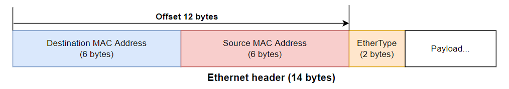
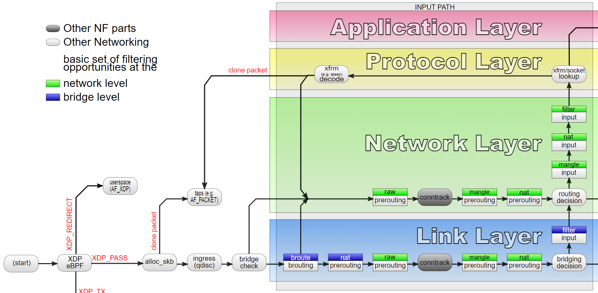
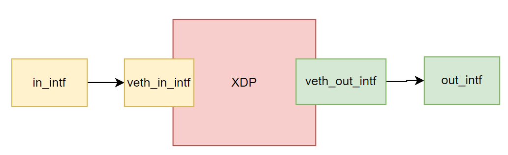
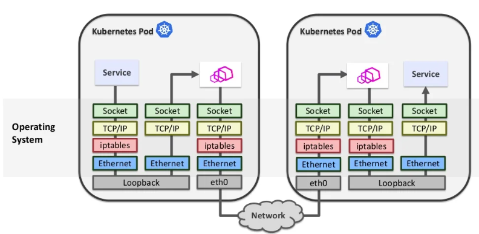
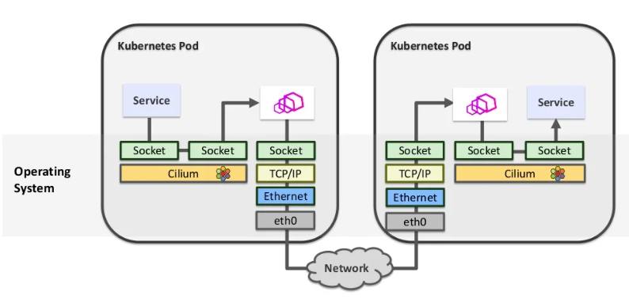

教練我想玩eBPF
目錄
- Day 01 - 前言
- Day 02 - eBPF的前世
- Day 03 - eBPF的應用
- Day 04 - eBPF基本知識(1) - Program type
- Day 05 - eBPF基本知識(2) - 如何撰寫
- Day 06 - eBPF基本知識(3) - 使用條件與載入流程
- Day 07 - eBPF基本知識(4) - JIT
- Day 08 - eBPF基本知識(5) - 生命週期
- Day 09 - eBPF基本知識(6) - Helper Funtions
- Day 10 - eBPF基本知識(7) - debug tracing
- Day 11 - eBPF基本知識(8) - map (上)
- Day 12 - eBPF基本知識(9) - map(下)
- Day 13 - eBPF基本知識(10) - Tail call
- Day 14 - BCC 簡介
- Day 15 - BCC 安裝
- Day 16 - BCC tcpconnect (上)
- Day 17 - BCC tcpconnect (下)
- Day 18 - BCC HTTP filter
- Day 19 - 外傳 - Socket filter 底層摸索 (上)
- Day 20 - 外傳 - Socket filter 底層探索 (下)
- Day 21 - XDP概念
- Day 22 - BCC xdp_redirect_map
- Day 23 - TC概念
- Day 24 - BCC neighbor_sharing
- Day 25 - eBPC tc direct
- Day 26 - Cgroups
- Day 27 - BCC sockmap (上)
- Day 28 - BCC sockmap (下)
- Day 29 - eBPF helper function速覽 (上)
- Day 30 - eBPF helper function速覽 (下)
Day1 - 前言
Day 01
原文：https://ithelp.ithome.com.tw/articles/10292014
發布日期：2022-09-16
起源
今年七月底參加COSCUP的時候，在kubernetes的相關議程一直聽到eBPF這個東西，後來參加LINE x KCD Taiwan Meetup #49，也再次討論了ebpf如何透過Cilium CNI這個專案在k8s裡面發揚光大。雖然聽到eBPF這個東西也已經有好一段時間了，但是一直沒有找機會深入了解和學習使用eBPF。剛好有朋友問我要不要寫鐵人賽，因此正好趁著這個機會好好學習eBPF。
因此本系列文章會是我的eBPF學習筆記，希望能透過這個機會達成有效的學習紀錄，也希望這份整理能夠幫助到其他想接觸eBPF的人。
本系列30天鐵人文章同步發表在我的個人部落格，我的部落格還有其他openstack, terraform, cni相關的文章，有興趣可以來了解交流~!
介紹
本次的30天挑戰預計包含幾個部分
- eBPF的基礎概念與歷史
- 實際的eBPF開發教學
- 更多著墨在XDP、TC、Socket網路相關的幾個eBPF的開發和探索，分析相關專案原始碼
- 有機會的話，可以了解一下cilium CNI和他的eBPF
由於這系列文章算是我的學習筆記，因此會更偏向從應用的角度來探討eBPF和學習開發，並且內容只是初步的規劃，可能會隨著學習歷程做改變。
如果內容有錯誤，還懇請大家協助更正。
以上是前言的部分，從Day2開始就會進入正題了!
Day2 - eBPF的前世
Day 02
原文：https://ithelp.ithome.com.tw/articles/10292839
發布日期：2022-09-17
要介紹eBPF勢必得先聊聊eBPF的前身 Berkeley Packet Filter (BPF)，BPF最早是在1993年USENIX上發表的一個在類Unix系統上封包擷取的架構。
由於封包會持續不斷的產生，因此在擷取封包時，單一個封包的處理時間可能只有幾豪秒的時間，又封包擷取工具的使用者通常只關注某部分特定的封包，而不會是所有的封包，因此將每個封包都丟到User space來處理是極為低效的行為，因此BPF提出了一種在kernal內完成的封包過濾的方法。
簡單來說，BPF在kernal內加入了一個簡易的虛擬機環境，可以執行BPF定義的指令集，當封包從網卡內進入的時候，就會進到BPF的虛擬機，根據虛擬機的執行結果來決定是否要解取該封包，要的話再送到user space，因此可以直接在kernal過濾掉所有不必要的封包。
大家最常使用的封包過濾工具應該是 tcpdump ，tcpdump底下就是基於BPF來完成封包過濾的，tcpdmp使用了libpcap這個library來與kernal的BPF溝通，當我們下達 tcpdump tcp port 23 host 127.0.0.1 這樣的過濾規則時，過濾規則會被libpcap編譯成BPC虛擬機可以執行的bpf program，然後載入到kernal的BPF虛擬機，BPF擷取出來的封包也會被libpcap給接收，然後回傳給tcpdump顯示
tcpdump -d ip
透過 -d 這個參數，我們可以看到 ip 這個過濾規則會被編譯成怎樣的BPF program
(000) ldh [12]
(001) jeq #0x800 jt 2 jf 3
(002) ret #262144
(003) ret #0
- Line 0
ldh指令複製從位移12字節開始的half word (16 bits)到暫存器，對應到ethernet header的ether type欄位。

- Line 1
jeq檢查暫存器數值是否為0x0800(對應到IP的ether type)- 是的話，走到Line 2
return 262144 - 不是的話，跳到Line 3
return 0
- 是的話，走到Line 2
ret指令結束BPF並根據回傳值決定是不是要擷取該封包，回傳值為0的話表示不要，非0的話則帶表要擷取的封包長度，tcpdump預設指定的擷取長度是262144 bytes。
BPF提供了一個高效、可動態修改的kernal執行環境的概念，這個功能不僅只能用在封包過濾還能夠用在更多地方，因此在Linux kernal 3.18加入了eBPF的功能，提供了一個"通用的" in-kernal 虛擬機。承接了BPF的概念，改進了虛擬機的功能與架構，支援了更多的虛擬機啟動位置，使eBPF可以用在更多功能上。
也因為eBPF做為一個現行更通用更強大的技術，因此現在提及BPF常常指的是eBPF，而傳統的BPF則用classic BPF (cBPF)來代指。
到此我們介紹完了eBPF的前世，明天開始就要進入正題eBPF了。
參考文獻
本系列30天鐵人文章同步發表在我的個人部落格
Day3 - eBPF的應用
Day 03
原文：https://ithelp.ithome.com.tw/articles/10292868
發布日期：2022-09-18
今天我們要正式來聊eBPF了!
在介紹BPF的時候，有提到BPF本身就是一個在kernal內的虛擬機。eBPF在kernal的許多功能內埋入了虛擬機的啟動點。例如當kernal執行clone這個system call的時候，就會去檢查有沒有eBPF程式的啟動條件是等待clone這個system call，如果有的話就會調用BPF虛擬機執行eBPF程式，同時把clone相關的資訊帶入到虛擬機。同時虛擬機的執行結果可以控制kernal的後續行為，因此可以透過eBPF做到改變kernal程式進程、數據，擷取kernal執行狀態等功能。
使用eBPF我們可以在不用修改kernal或開發kernal module的情況下，增加kernal的功能，大大了降低了kernal功能開發的難度還有降低對kernal環境版本的依賴。
這邊舉立一些eBPF的用途
-
in kernal 的網路處理: 以往在linux上要實作網路封包的處理，通常都會經過整個kernal的network stack，通過iptables(netfilter), ip route等組件的處理。透過eBPF，我們可以在封包進入kernal的早期去直接丟棄非法封包，這樣就不用讓每個封包都要跑完整個network stack，達到提高效能的作用
- 最知名的應該是Cilium這個CNI專案，基於eBFP提供了整套完整網路、安全、監控的Kubernetees CNI方案。
-
kernal tracing: 前面提到eBPF在kernal內的許多地方都埋入了啟動點，因此透過eBPF可以再不用對kernal做任何修改的情況下，很有彈性的監聽分析kernal的執行狀況
- 下圖是bcc專案使用eBPF開發的一系列Linux監看工具，基本涵蓋了kernal的各個面向。

- 下圖是bcc專案使用eBPF開發的一系列Linux監看工具，基本涵蓋了kernal的各個面向。
-
另外一個專安
bpftrace也提供了一個非常簡單的語法，來產生對應的eBFP tracing code。 -
user level tracing: 透過eBFP，我們可以做user level的dynamic tracing，來監看user space應用程式的行為。
- 一個很有趣的案例是我們可以使用eBPF來做ssl加密連線的監看。SSL/TSL的連線加密通常是在user space應用程式內完成加密的，因此即便我們監看應用程式送入kernal socket的內容，內容也已經是被加密的了。但是要拆解應用程式來查看又相對比較複雜困難，使用eBPF就可以用一個相對簡單的方法來監看加密訊息。
- 在Linux上，應用程式的加密經常會使用libssl這個library來完成，並使用libssl提供的
SSL_read和SSL_write取代 socket 的read和write，透過eBPF的功能，我們可以比較簡單的直接監聽應用程式對這兩個函數的呼叫，並直接提取出未加密的連線內容。
-
Security: 前面有講到透過eBFP，我們可以監控system call的呼叫、kernal的執行、user space程式的函數呼叫等等，因此我們也就可以透過eBFP來監控這些事件，並以此檢測程式的安全，拒絕非法的system call呼叫，或異常行為等等。
- 詳細可以參考
Tetragon和tracee之類的專案。
- 詳細可以參考
上面大概介紹了一些eBFP的應用場景，BPF經過擴展之後，不再侷限於封包過濾這個場景，而在網路處理、内核追蹤、安全監控，等各個方面有了更多可以開發的潛能。
參考文獻
本系列30天鐵人文章同步發表在我的個人部落格
Day4 - eBPF基本知識(1) - Program type
Day 04
原文：https://ithelp.ithome.com.tw/articles/10294364
發布日期：2022-09-19
接下來幾天會介紹一些eBPF裡面的重要概念還有eBPF的載入流程
首先要介紹的是Program type。
我們可以把eBPF程式區分成不同的BPF program type，不同的program type代表實現不同功能的eBPF程式。根據program type的不同，eBPF程式的輸入和輸出格式就不同，也影響到不同的kernal組件。
到目前Linux kernal 5.19版，linux總共定義了32種的program type。在linux kernal source code的 include/uapi/linux/bpf.h 中定義了bpf_prog_type列舉，列舉了所有的program type。
enum bpf_prog_type {
BPF_PROG_TYPE_UNSPEC,
BPF_PROG_TYPE_SOCKET_FILTER,
BPF_PROG_TYPE_KPROBE,
BPF_PROG_TYPE_SCHED_CLS,
BPF_PROG_TYPE_SCHED_ACT,
BPF_PROG_TYPE_TRACEPOINT,
BPF_PROG_TYPE_XDP,
BPF_PROG_TYPE_PERF_EVENT,
BPF_PROG_TYPE_CGROUP_SKB,
BPF_PROG_TYPE_CGROUP_SOCK,
...
};
以BPF_PROG_TYPE_XDP為例，XDP是Express Data Path的縮寫，XDP程式會在封包從網路卡進入到kernal的最早期被觸發。
kernal會帶入xdp_md資料結構作為eBPF程式的輸入，包含了封包的內容、封包的來源介面等資訊。
// include/uapi/linux/bpf.h
/* user accessible metadata for XDP packet hook */
struct xdp_md {
__u32 data;
__u32 data_end;
__u32 data_meta;
/* Below access go through struct xdp_rxq_info */
__u32 ingress_ifindex; /* rxq->dev->ifindex */
__u32 rx_queue_index; /* rxq->queue_index */
__u32 egress_ifindex; /* txq->dev->ifindex */
};
eBPF程式必須回傳一個xdp_action，包含XDP_PASS表示封包可以繼續通過到kernal network stack，XDP_DROP表示直接丟棄該封包。
// include/uapi/linux/bpf.h
enum xdp_action {
XDP_ABORTED = 0,
XDP_DROP,
XDP_PASS,
XDP_TX,
XDP_REDIRECT,
};
透過這樣的eBPF程式，我們就可以在封包剛進入kernal的時候直接丟棄非法封包，能夠有效的處理DDos攻擊等問題。
以此可以寫出一個極簡單的eBPF程式範例 (只包含最主要的部份，完整的程式寫法會在後面提到)
int xdp_prog_simple(struct xdp_md *ctx)
{
return XDP_DROP;
}
這個eBPF程式可以被attach到某一個interface上，當封包進來時會被呼叫。由於無條件回傳XDP_DROP，因此會丟棄所有的封包。
參考文獻
- https://blogs.oracle.com/linux/post/bpf-a-tour-of-program-types
- https://arthurchiao.art/blog/bpf-advanced-notes-1-zh/
本系列30天鐵人文章同步發表在我的個人部落格
Day5 - eBPF基本知識(2) - 如何撰寫
Day 05
原文：https://ithelp.ithome.com.tw/articles/10294534
發布日期：2022-09-20
從昨天最後的範例可以看到一個eBPF程式其實一個c語言格式的程式碼
int xdp_prog_simple(struct xdp_md *ctx)
{
return XDP_DROP;
}
eBPF程式碼要被編譯成eBPF虛擬機的bytecode才能夠執行。
以XDP為例，最底層的做法是直接使用LLVM之類的工具直接編譯這段eBPF程式碼。
首先需要補齊使用LLVM編譯時，需要的header file和資訊。
#include <uapi/linux/bpf.h>
SEC("xdp_prog")
int xdp_program(struct xdp_md *ctx)
{
return XDP_DROP;
}
char _license[] SEC("license") = "GPL";
接著使用LLVM編譯成ELF格式文件
clang -c -target bpf xdp.c -o xdp.o
然後使用bpf system call將bytecode載入到kernal的eBPF虛擬機內，並取得對應的file descriptor。最後透過netlink socket發送一個NLA_F_NESTED | 43訊息來把interface index與ebpf程式的file descriptor綁定。就能夠讓eBPF程式在對應的interface封包處理過程中被呼叫。
iproute2有實作載入eBPF的功能，因此可以透過下指令
ip link set dev eth1 xdp xdp.o
可能會注意在程式碼的最後一行。特別標註了GPL licence。由於eBPF程式會嵌入到kernel，與kernel緊密的一起執行(共用address space、權限等)，在判斷獨立程式的邊界時，eBPF程式和相關的kernel組件會被視為一體，因此eBPF程式會受到相關的licence限制。
而這邊提到的內核組件指的是eBPF helper function。後面會詳細介紹helper function是eBPF程式與kernel溝通的橋梁，由於eBPF程式是在eBPF虛擬機內執行，因此如果要取得kernel的額外資訊或改變kernel的行為，必須透過虛擬機提供的helper function接口。
一部份的helper function基於GPL授權，因此當eBPF程式使用了GPL授權的helper function就必須標示為GPL授權，否則將eBPF程式載入到kernel時，會直接被kernel拒絕。
直接使用最底層的方法開發相對來說是不方便和困難的，不同program type的載入方式可能還完全不一樣，因此許多抽象的框架和SDK被發出來。雖然還是需要編寫eBPF的c code，但是編譯、載入、溝通等工作被包在SDK裡面，可以方便的直接使用。
這邊舉例BPF Compiler Collection (BCC)這套工具，BCC將eBPF的編譯和載入動作包裝成了python的API，因此能夠簡單的完成eBPF的編譯和執行。
from bcc import BPF
import time
b = BPF(text = """
#include <uapi/linux/bpf.h>
int xdp_prog1(struct xdp_md *ctx)
{
return XDP_DROP;
}
""")
fn = b.load_func("xdp_prog1", BPF.XDP)
b.attach_xdp("wlp2s0", fn, 0)
try:
while True:
time.sleep(1)
except KeyboardInterrupt:
pass
b.remove_xdp("wlp2s0", 0)
本系列30天鐵人文章同步發表在我的個人部落格
Day6 - eBPF基本知識(3) - 使用條件與載入流程
Day 06
原文：https://ithelp.ithome.com.tw/articles/10295858
發布日期：2022-09-21
使用條件
在開始玩eBPF之前，我們要先確定一下我們的環境能夠使用eBPF。最早在kernal 3.15版加入了eBPF功能。後續在3.15到現在的5.19版間，eBPF陸陸續續加入了許多新的功能，因此開發的時候，如果不是使用最新版的作業系統，就可能會需要確認一下版本是否支援，各個功能支援的版本可以在這邊參考
另外就是eBPF的功能需要在編譯kernel的時候啟用，大部分的發行版應該都直接啟用了，不過如果使用時出現問題可能還是到/proc/config.gz或/boot/config-<kernel-version>檢查內核編譯的設定，是否有開啟CONFIG_BPF, CONFIG_BPF_SYSCALL, CONFIG_BPF_JIT還有其他BPF相關Kernal選項。
設定可以參考bcc的安裝需求
載入流程
圖片原址：https://ebpf.io/static/loader-dff8db7daed55496f43076808c62be8f.png
{kind=link}
當eBPF程式編譯完成後，就需要透過bpf system call (原始碼)，將編譯後的bytecode載入kernel內執行。
為了安全性考量，要掛載eBPF程式需要root權限或CAP_BPF capability，不過目前也有在設計讓非root權限帳號能載入eBPF程式，因此將kernel.unprivileged_bpf_disabled sysctl設置為false的情況下，非root帳號是有能力能夠使用BPF_PROG_TYPE_SOCKET_FILTER的eBPF程式。
eBPF程式需要嵌入到kernel執行，因此eBPF程式的安全性是極為重要的，也要避免eBPF程式的錯誤有可能會導致kernel崩潰或卡死，因此每個載入kernel的eBPF程式都要先經過接著verifier檢查。
首先eBPF程式必須要在有限的時間內執行完成，不然就會造成kernel卡死，因此在早期的版本中verifier是拒絕任何loop的存在的，整個程式碼必須是一張DAG(有向無環圖)。不過在kernel 5.3版本開始，verifier允許了有限次數的循環，verifier會透過模擬執行檢查eBPF是不是會在有限次數內在所有可能的分支上走到bpf_exit。
接著eBPF程式的大小也存在限制，早期只一個eBPF程式只允許4096個ebpf instruction，在設計比較複雜的eBPF程式上有些捉襟見肘，因此後來在5.2版這個限制被放寬成1 million個指令，基本上是十分夠用了，也還是能確保ebpf程式在1/10秒內執行完成。
然後程式的stack也存在大小限制，目前限制是512。
當然verifier檢查的項目不只如此，昨天提到的non-GPL licence eBPF程式使用GPL licence的helper function，也會在verifier收到一個cannot call GPL-restricted function from non-GPL compatible program的錯誤。
此外verifier也會針對helper function的函數呼叫參數合法性，暫存器數值合法性，或其他無效的使用方式、無效的回傳數值、特定必須的資料結構是否定義、是否非法存取修改數據、無效的instruction參數等等做出檢查以及拒絕存在無法執行到的程式碼。
以此來確保eBPF程式的安全性，具體的verifier可以參考1萬5千行的原始碼
通過verifer的檢查後，eBPF程式會被送到JIT compiler做二次編譯，不過這個部份我們就等到明天再來討論了。
本系列30天鐵人文章同步發表在我的個人部落格
Day7 - eBPF基本知識(4) - JIT
Day 07
原文：https://ithelp.ithome.com.tw/articles/10296128
發布日期：2022-09-22
接續昨天的內容，當eBPF程式通過verifier的驗證之後會進行JIT(Just In Time)的二次編譯。之前一直提到eBPF是一個執行在kernel內的虛擬機，因此編譯出來的bytecode需要再執行的過程中在轉換成machine code，才能夠真正在CPU上面執行，然而這樣的虛擬化和轉換過程，會造成eBPF程式的執行效率，比直接執行machine code要低上很多。
因此eBPF加入了JIT的功能，簡單來說就是把eBPF的bytecode預先在載入的時候，直接編譯成CPU可執行的machine code，在執行eBPF程式的時候就可以直接執行，而不用再經過eBPF虛擬機的轉換，使eBPF可以達到原生程式的執行效率。
由於JIT需要編譯出machine code，因此針對不同的CPU平台他的支援是分開的，不過當然到了現在，基本上大部分主流的CPU架構(x86, ARM, RISC, MIPS...)都已經支援了，具體的支援情況可以參考這張表。https://github.com/iovisor/bcc/blob/master/docs/kernel-versions.md#jit-compiling
同樣JIT是eBPF的一個可開關的獨立功能，透過設置bpf_jit_enable來啟用JIT的功能
systcl -w net.core.bpf_jit_enable=1
(設置為2的話，可以在kernel log看到相關日誌)
到此eBPF程式就就完成載入了，雖然在eBPF程式的載入過程中還會完成一些資料結構的建立和維護，但是這個部分就不再本文的範圍內了。
當然到此eBPF程式只是載入到了內核之中，並未連接到任何的hook point，因此到此為eBPF程式還未能真正被執行，不過這就是後面的故事了。
- 備註: 從kernel source code來看，在eBPF程式載入的過程中會呼叫bpf_prog_select_runtime來判斷是否要呼叫JIT compiler去編譯，有興趣可以去trace這部分的code。
本系列30天鐵人文章同步發表在我的個人部落格
Day8 - eBPF基本知識(5) - 生命週期
Day 08
原文：https://ithelp.ithome.com.tw/articles/10296560
發布日期：2022-09-23
在透過bpf(BPF_PROG_LOAD, ...) system call將eBPF程式載入內核的過程(可以參考原始碼)，會替該eBPF程式建立struct bpf_prog 結構，其中prog->aux->refcnt計數器記錄了該eBPF程式的參考數量，載入的時候會透過atomic64_set(&prog->aux->refcnt, 1);將refcnt設置為一，並返為對應的file descriptor。
當refcnt降為0的時候，就會觸發unload，將eBPF程式資源給釋放掉。(原始碼)
因此如果呼叫BPF_PROG_LOAD的程式沒有進一步操作，並直接結束的話，當file descriptor被release，就會觸發refcnt--，而變成0並移除eBPF程式。
要增加eBPF程式refcnf大致上有幾種方式
- 透過bpf systemcall的BPF_BTF_GET_FD_BY_ID等方式取得eBPF程式對應的file descriptor
- 將eBPF程式attach到事件、Link上，使eBPF程式能真的開始工作。
- 因此當eBPF被attach到hook points上之後，即便原始載入程式結束也不會導致eBPF程式被回收，而可以正常繼續工作。
- Link是eBPF後來提供的新特性，因此暫時超出了本文的討論範圍
- 透過bpf systemcall的BPF_OBJ_PIN，將eBPF程式釘到BPFFS上。
- BPFFS是BPF file system，本質上是一個虛擬的檔案系統，一樣透過bpf system call的BPF_OBJ_PIN，我們可以把eBPF程式放到
/sys/fs/bpf/路徑下的指定位置，並透過open的方式直接取得file descriptor。PIN同樣會增加refcnt，因此PIN住的程式不會被回收 - 要釋放PIN住的程式，可以使用unlink指令移除虛擬檔案，即可取消PIN。
- BPFFS是BPF file system，本質上是一個虛擬的檔案系統，一樣透過bpf system call的BPF_OBJ_PIN，我們可以把eBPF程式放到
透過以上的操作都會增加refcnt，相反的，對應的資源釋放則會減少refcnt。因此只要確保有任何一個eBPF程式的參考存在，即可保證eBPF程式一直存在kernel內。
- 參考文獻
https://facebookmicrosites.github.io/bpf/blog/2018/08/31/object-lifetime.html
https://stackoverflow.com/questions/68278120/ebpf-difference-between-loading-attaching-and-linking
本系列30天鐵人文章同步發表在我的個人部落格
Day9 - eBPF基本知識(6) - Helper Funtions
Day 09
原文：https://ithelp.ithome.com.tw/articles/10297659
發布日期：2022-09-24
之前在介紹eBPF的GPL授權的時候，有提到eBPF helper function這個東西，今天我們來比較仔細的介紹一下。
之前提到eBPF程式是在eBPF虛擬機內執行，由於eBPF程式會嵌入kernel內，在kernel space執行，所以為了安全性考量我們不能讓eBPF程式任意的存取和修改kernel記憶體和呼叫kernel函數，因此eBPF的解決方案是提供了一系列的API，讓eBPF程式只能夠過限定的API去與kernel溝通，因此可以讓eBPF程式對kernel的操作限制在一個可控的範圍，也可以透過verifier和API後面的實作去確保API呼叫的有效和安全性。
在eBPF裡這一系列的API就稱之為eBPF helper funtions。
另外不同的對於eBPF program type的eBPF程式，由於他們執行的時機點和在kernel的位置不同，因此他們能夠取得的kernel資訊也就不同，他們可以呼叫執行的helper funtions也就不同。具體每個不同program type可以執行的helper function可以參考bcc的文件
下面列幾舉個所有program type都可以呼叫的helper function
- u64 bpf_ktime_get_ns(void)
- 取得從開機開始到現在的時間，單位是奈秒
- u32 bpf_get_prandom_u32(void)
- 取得一個random number
接著我們舉例在BPF_PROG_TYPE_SOCKET_FILTER下才能使用的helper function
- long bpf_skb_load_bytes(const void *skb, u32 offset, void *to, u32 len)
- 由於socket filter的功能就是對socket的流量做過濾，因此我們可以透過skb_load_bytes來取得socket傳輸的封包內容
完整的helper function列表還有每個函數具體的定義以及使用說明描述可以在bpf.h查找到。
另外特別要注意的是受限於eBPF虛擬機的限制，eBPF helper function的參數數量最多只可以有五個，在使用不定參數長度的參數時，最多也只能有5個參數(特別是指明天會提到的trace_printk。
因此雖然eBPF非常強大能夠非常方便的動態對kernel做修改，但為了安全，他可以執行的操作是訂定在一個非常嚴格的框架上的，在開發時需要熟習整個框架的限制和可利用的API資源。
本系列30天鐵人文章同步發表在我的個人部落格
Day10 - eBPF基本知識(7) - debug tracing
Day 10
原文：https://ithelp.ithome.com.tw/articles/10298531
發布日期：2022-09-25
在將eBPF程式載入kernel工作後，我們勢必需要一些手段來與eBPF程式做溝通，一方面我們需要輸出偵錯訊息，來對eBPF程式debug，一方面我們可能會希望能夠實時透過eBPF程式取得kernel的某些資訊又或著動態調整eBPF程式的執行規則。
如果只是需要eBPF程式單方面的輸出訊息，讓我們可以偵錯，可以使用比較簡單的手段。eBPF有提供一個helper function long bpf_trace_printk(const char *fmt, u32 fmt_size, ...)，可以輸入一個格式化字串fmt，及最多三個變數(參數個數的限制)。輸出結果會被輸出到/sys/kernel/debug/tracing/trace_pipe中。.
可以透過指令查看輸出結果:
sudo cat /sys/kernel/debug/tracing/trace_pipe
輸出的格式如下:
telnet-470 [001] .N.. 419421.045894: 0x00000001: <formatted msg>
- 首先是process name
telnet，然後是PID 470。 - 接續的001是指當前執行的CPU編號。
- .N..的每個字元對應到一個參數
- irqs 中斷是否啟用
TIF_NEED_RESCHED和PREEMPT_NEED_RESCHED是否設置 (用於kernel process scheduling)- 硬中断/軟中断是否發生中
- level of preempt_disabled
- 419421.045894 時間
- 0x00000001: eBPF內部的指令暫存器數值
雖然trace_printk可以接收格式化字串，但是支援的格式字元比較少，只支援%d, %i, %u, %x, %ld, %li, %lu, %lx, %lld, %lli, %llu, %llx, %p, %s。
另外有一個bpf_printk巨集，會使用sizeof(fmt)幫忙填上第二個fmt_size。因此使用bpf_printk可以省略fmt_size。
在比較新的版本提供了bpf_snprintf和bpf_seq_printf兩個新的print函數，前者是把資料寫入預先建立好的buffer內，後者可以寫入在特定program type下可以取得的seg_file，兩者皆用陣列存放後面的參數列，因此可以打破helper funtion 5個參數的限制。
最後要特別注意的是使用trace_printk會大幅拖慢eBPF程式的執行效率，所以trace_printk只適用於開發時用來debug使用，不適用於正式環境當中。
本系列30天鐵人文章同步發表在我的個人部落格
Day11 - eBPF基本知識(8) - map (上)
Day 11
原文：https://ithelp.ithome.com.tw/articles/10298916
發布日期：2022-09-26
今天我們要介紹eBPF的另外一個重要組件map，前一天提到trace_printk只適合用在除錯階段，輸出eBPF的執行資訊到user space，然而我們需要一個可以在正式環境內，提供user space程式和eBPF程式之間雙向數據交換的能力，另外每次觸發eBPF程式都可看作獨立執行eBPF程式，所以也需要在多次呼叫eBPF程式時共享資料的功能。因此eBPF程式引入了map。
eBPF map定義了一系列不同的不同的資料結構類型，包含了hash, array, LRU hash, ring buffer, queue等等，另外也提供per-cpu hash, per-cpu array等資料結構，由於每顆CPU可以獲得獨立的map，因此可以減少lock的需求，提高執行效能。所有的map type一樣可以參考bpf.h的enum bpf_map_type。
struct bpf_map_def SEC("maps") map = {
.type = BPF_MAP_TYPE_ARRAY,
.key_size = sizeof(int),
.value_size = sizeof(__u32),
.max_entries = 4096,
};
首先要先在eBPF程式內定義map的資料結構，在eBPF程式內定義一個map時，基本需要定義四個東西分別是該資料結構的map type, key和value的大小以及資料結構內最多有含多少entry，如果超出max_entries上限則會發生錯誤回傳(-E2BIG)。
eBPF提供了bpf_map_lookup_elem, bpf_map_update_elem, bpf_map_delete_elem等helper functions來對map資料做操作。lookup的完整定義是void *bpf_map_lookup_elem(struct bpf_map *map, const void *key)，透過key去尋找map裡面對應的value，並返回其指標，由於返回的是指標，所以會指向map真實儲存的記憶體，可以直接對其值進行更新。
當然除了幾個基本的helper function外，不同的map type可能會支援更多的操作或功能，例如bpf_skb_under_cgroup是給BPF_MAP_TYPE_CGROUP_ARRAY專用的。
原始碼解析
linux kernel定義了struct bpf_map_ops，來描述map可能會支援的所有功能。
struct bpf_map_ops {
/* funcs callable from userspace (via syscall) */
int (*map_alloc_check)(union bpf_attr *attr);
struct bpf_map *(*map_alloc)(union bpf_attr *attr);
void (*map_release)(struct bpf_map *map, struct file *map_file);
void (*map_free)(struct bpf_map *map);
int (*map_get_next_key)(struct bpf_map *map, void *key, void *next_key);
void (*map_release_uref)(struct bpf_map *map);
void *(*map_lookup_elem_sys_only)(struct bpf_map *map, void *key);
...
}
不同的map再根據需要去實作對應的操作，在include/linux/bpf_types.h定義。以BPF_MAP_TYPE_QUEUE這個map type來說對應到queue_map_ops。
// kernel/bpf/queue_stack_maps.c
const struct bpf_map_ops queue_map_ops = {
.map_meta_equal = bpf_map_meta_equal,
.map_alloc_check = queue_stack_map_alloc_check,
.map_alloc = queue_stack_map_alloc,
.map_free = queue_stack_map_free,
.map_lookup_elem = queue_stack_map_lookup_elem,
.map_update_elem = queue_stack_map_update_elem,
.map_delete_elem = queue_stack_map_delete_elem,
.map_push_elem = queue_stack_map_push_elem,
.map_pop_elem = queue_map_pop_elem,
.map_peek_elem = queue_map_peek_elem,
.map_get_next_key = queue_stack_map_get_next_key,
.map_btf_name = "bpf_queue_stack",
.map_btf_id = &queue_map_btf_id,
};
當呼叫bpf_map_push_elem時，就會呼叫bpf_map_ops.map_push_elem來調用queue的queue_stack_map_push_elem完成。
而具體每個map支援什麼help function可能就要參考helper function文件描述
使用範例
這邊我們一個特別的使用實例來看
struct elem {
int cnt;
struct bpf_spin_lock lock;
};
struct bpf_map_def SEC("maps") counter = {
.type = BPF_MAP_TYPE_ARRAY,
.key_size = sizeof(int),
.value_size = sizeof(elem),
.max_entries = 1,
};
首先我們定義了一個特別的ARRAY map，它的array size只有1，然後value是一個包含u32整數和一個lock的資料結構。
SEC("kprobe/sys_clone")
int hello_world(void *ctx) {
u32 key = 0;
elem *val;
val = bpf_map_lookup_elem(&counter, &key);
bpf_spin_lock(&val->lock);
val->cnt++;
bpf_spin_unlock(&val->lock);
bpf_trace_printk("sys_clone count: %d", val->cnt);
return 0;
}
由於key我們固定是0，透過bpf_map_lookup_elem我們永遠會取得同一筆資料，因此可以簡單看成我們把counter當作一個單一的容器來存放cnt變數，並使用lock避免cnt更新時的race condition。
我們將這個程式附加到kprobe/sys_clone，就可以用來統計sys_clone呼叫的次數。
今天我們看到了怎麼透過map保存資料，明天我們會來看看怎麼透過map與user space進行溝通。
- 參考資料
https://vvl.me/2021/02/eBPF-3-eBPF-map/
https://arthurchiao.art/blog/bpf-advanced-notes-3-zh/
https://www.ebpf.top/post/bpf_ring_buffer/
https://blog.csdn.net/M2l0ZgSsVc7r69eFdTj/article/details/108612744
本系列30天鐵人文章同步發表在我的個人部落格
Day12 - eBPF基本知識(9) - map(下)
Day 12
原文：https://ithelp.ithome.com.tw/articles/10299791
發布日期：2022-09-27
接續前面的內容，今天我們要來研究怎麼透過map與user space的程式溝通。
和其他eBPF的操作一樣，我們透過bpf的system call去與kernel進行溝通。跟helper fuction 類似，bpf systemcall 提供了BPF_MAP_LOOKUP_ELEM, BPF_MAP_UPDATE_ELEM, BPF_MAP_DELETE_ELEM等參數來提供搜尋、更新、刪除map數值的方法。另外為了減少system call的開銷，也提供BPF_MAP_LOOKUP_BATCH, BPF_MAP_LOOKUP_AND_DELETE_BATCH, BPF_MAP_UPDATE_BATCH, BPF_MAP_DELETE_BATCH等方法來在單次system call內完成多次map操作。
必要要注意的是map並不是eBPF program的附屬品，在eBPF虛擬機內，map和program一樣是獨立的物件，每個map有自己的refcnt和生命週期，eBPF程式的生命週期和map不一定是統一的。
map載入流程
在透過函式庫將eBPF程式載入kernel時，先做的其實是建立map，對每張map會呼叫bpf system call的BPF_MAP_CREATE，並帶入map type, key size, value size, max entries, flags等資訊來建立map，建立完成後會返回map對應的fire descripter。
接著函數庫會修改編譯過的ebpf bytecode裡面參考到map變數的地方(例如lookup等helper function的參數部分)，將原先流空的map地址修改成map對應的file descripter。
接著一樣呼叫bpf BPF_PROG_LOAD來載入eBPF bytecode，在載入過程中，verifier會呼叫到replace_map_fd_with_map_ptr函數，將bytecode裡面map的file descripter在替換成map的實際地址。
Map 持久化
如昨天所述，map在eBPF虛擬機內和prog同等是獨立的存在，並且具有自己的refcnt，因此和prog一樣，我們可以透過bpf BPF_OBJ_PIN將map釘到BPFFS的/sys/fs/bpf/路徑下，其他程式就一樣能透過open file的方式取得map的file descripter，將map載入到其他的eBPF程式內，達成了多個eBPF程式share同一個map的效果。
本系列30天鐵人文章同步發表在我的個人部落格
Day13 - eBPF基本知識(10) - Tail call
Day 13
原文：https://ithelp.ithome.com.tw/articles/10300161
發布日期：2022-09-28
eBPF的基本知識部分來到了第10章，剛好也就是這個部分的最後一章，今天我們要來聊的是tail call的功能。
tail call簡單來說就是在eBPF程式內執行另外一個eBPF程式，不過和一般的函數呼叫不一樣，eBPF虛擬機在跳轉到另外一個eBPF程式後就不會再回到前一個程式了，所以他是一個單向的呼叫。
另外雖然他會直接複用前一個eBPF程式的stack frame，但是被呼叫的eBPF程式不能夠存取前呼叫者的暫存器和stack，只能透取得在呼叫tail call時，透過參數傳遞的ctx。
使用tail call可以透過拆解簡化一個eBPF程式，打破單個eBPF程式只能有512bytes的stack、1 million個指令的限制。
一個使用範例是先使用一個eBPF程式作為packet dispatcher，然後根據不同的packet ether type之類的欄位，將packet轉發給對應處理的eBPF程式。
另外一個就是將eBPF程式視為多個模組，透過map和tail call去動態的任意重整排序執行結構。
為了避免eBPF程式交替呼叫彼此導致卡死的狀況，kernel定義了MAX_TAIL_CALL_CNT表示在單個context下最多可呼叫的tail call次數，目前是32。如果tail call因為任何原因而執行失敗，則會繼續執行原本的eBPF程式。
如何使用
tail call的helper function定義如下long bpf_tail_call(void *ctx, struct bpf_map *prog_array_map, u32 index)。在使用的時候我們要一個BPF_MAP_TYPE_PROG_ARRAY type的map，用來保存一個eBPF program file descriptor的陣列。在呼叫tail call的時候傳遞進去執行。
eBPF的基本知識部分到這邊就結束拉，明天開始會是新的篇章。
- 參考文件
https://man7.org/linux/man-pages/man7/bpf-helpers.7.html
https://lwn.net/Articles/645169/
https://www.readfog.com/a/1663618518017478656
本系列30天鐵人文章同步發表在我的個人部落格
Day14 - BCC 簡介
Day 14
原文：https://ithelp.ithome.com.tw/articles/10300982
發布日期：2022-09-29
前面兩周的時間我們完成了eBPF基本架構和功能的介紹，接下來一周的時間我們的主題會放在之前在在Day5的範例程式碼有出現過的BCC這個eBPF Project的介紹，並透過bcc專案的範例程式碼學習eBPF的實際的撰寫。
BPF Compiler Collection (BCC)
BCC 是一套用於eBPF，用來有效開發 kernel 追蹤修改程式的工具集。
BCC我覺得可以看成兩個部分:
- eBPF的python和lua的前端，透過BCC我們可以使用python和lua比較簡單的開發eBPF的應用程式，BCC將bpf system call還有eBPC程式編譯封裝成了API，並提供一系列預先定義好的巨集和語法來簡化eBPF程式。
from bcc import BPF
b = BPF(text = """
#include <uapi/linux/bpf.h>
int xdp_prog1(struct xdp_md *ctx)
{
return XDP_DROP;
}
"""
fn = b.load_func("xdp_prog1", BPF.XDP)
b.attach_xdp("eth0", fn, 0)
以上面的範例來說，透過BPF物件實立化時會完成eBPC bytecode的編譯，然後透過load_func和attach_xdp就可以很簡單的將上面的eBPF程式碼編譯載入到kernel然後attach到xdp的hook point上。
-
一系列使用自身框架開發的工具
- BCC使用自己的API開發了一系列可以直接使用的現成bcc eBPF程式，本身就幾乎涵蓋了eBPF的所有program type，可以開箱即用，直接跳過eBPF的開發。
- 下圖包含了BCC對linux kernel各個模組實現的工具名稱

-
eBPC本身和bcc相關的開發文件以及範例程式
- 可以看到前面很多天有參考到BCC的文件，資料非常地豐富
今天就到這邊，明天會從BCC的開發環境建置開始講。
最後附上bcc的github repo: https://github.com/iovisor/bcc
本系列30天鐵人文章同步發表在我的個人部落格
Day15 - BCC 安裝
Day 15
原文：https://ithelp.ithome.com.tw/articles/10301922
發布日期：2022-09-30
首先bcc的安裝大概有幾種方式
- 透過各大發行板的套件管理工具安裝
- 直接使用原始碼編譯安裝
- 透過docker image執行
對於前兩著，bcc官方的文件列舉了需多發行版的安裝方式，所以可以很容易地照著官方文件安裝。以ubuntu來說，可以透過Universe或iovisor的repo安裝。
# use Universe
# add-apt-repository universe
# iovisor
sudo apt-key adv --keyserver keyserver.ubuntu.com --recv-keys 4052245BD4284CDD
echo "deb [trusted=yes] https://repo.iovisor.org/apt/xenial xenial-nightly main" | sudo tee /etc/apt/sources.list.d/iovisor.list
sudo apt-get update
sudo apt-get install bcc-tools libbcc-examples linux-headers-$(uname -r)
然而必須要注意的是，目前iovisor和universe上面的bcc套件本的都比較陳舊，甚至沒有20.04和22.04對應的安裝源，因此透過apt安裝可能會出現版本不支援或安裝後連範例都跑不起來的問題。
因此特別建議透過原始碼來安裝會是比較穩妥的方式。一樣在bcc的的安裝文檔 詳細列舉了在各個發行版本的各個版本下，要怎麼去安裝相依套件，然後編譯安裝bcc。
sudo apt install -y bison build-essential cmake flex git libedit-dev \
libllvm12 llvm-12-dev libclang-12-dev python zlib1g-dev libelf-dev libfl-dev python3-distutils
git clone https://github.com/iovisor/bcc.git
mkdir bcc/build; cd bcc/build
cmake ..
make
sudo make install
cmake -DPYTHON_CMD=python3 .. # build python3 binding
pushd src/python/
make
sudo make install
popd
這邊同樣以ubuntu舉例，首先因為BCC後端還是使用LLVM，因此需要先安裝llvm以及bcc編譯需要的cmake等工具，然後後過cmake編譯安裝。
安裝完成後，昨天提到的bcc自己寫好的kernel trace tools會被安裝到/usr/share/bcc/tools，因此可以直接cd到該目錄來玩，由於這些tools其實就是python script，所以其實也可以直接透過python3執行bcc repo下tools目錄內的python檔，其結果其實是一樣的。
同樣的還有examples這個資料夾下的範例也會被安裝到/usr/share/bcc/examples目錄下。
最後是透過docker的方式執行bcc。同樣參考bcc的quickstart文件，不過加上--pid=host
docker run -it --rm \
--pid=host \
--privileged \
-v /lib/modules:/lib/modules:ro \
-v /usr/src:/usr/src:ro \
-v /etc/localtime:/etc/localtime:ro \
--workdir /usr/share/bcc/tools \
zlim/bcc
但是不論是直接使用zlim/bcc還是透過bcc repo內的dockerfile自行編譯，目前測試起來還是有許多問題，使用zlim/bcc在執行部分的eBPF程式時會編譯失敗，直接透過dockerfile編譯初步測試也沒辦法build成功，因此目前自行編譯使用可能還是相對比較穩定簡單快速的方式。
由於在設置bcc開發環境時，踩到了許多坑，因此特別花一天的時間來聊安裝的部分，明天我們就可以正式來看bcc的程式碼了。
本系列30天鐵人文章同步發表在我的個人部落格
Day16 - BCC tcpconnect (上)
Day 16
原文：https://ithelp.ithome.com.tw/articles/10302466
發布日期：2022-10-01
我們今天要來看的是tools/tcpconnect.py這支程式。原始碼在這邊。
這隻程式會追蹤紀錄kernel發起的TCP連線
python3 tools/tcpconnect
Tracing connect ... Hit Ctrl-C to end
PID COMM IP SADDR DADDR DPORT
2553 ssh 4 10.0.2.15 10.0.2.1 22
2555 wget 4 10.0.2.15 172.217.160.100 80
執行結果大概長這樣，可以看到發起連線的pid, 指令名稱，ip version, IP地址和目標port等資訊。
首先透過argparse定義了指令的參數輸入，主要是提供filter的選項，讓使用者可以透過pid, uid, namespace等參數去filter連線紀錄。
parser = argparse.ArgumentParser(
description="Trace TCP connects",
formatter_class=argparse.RawDescriptionHelpFormatter,
epilog=examples)
parser.add_argument("-p", "--pid",
help="trace this PID only")
...
args = parser.parse_args()
接著就來到主要的eBPF程式碼的定義
bpf_text = """
#include <uapi/linux/ptrace.h>
#include <net/sock.h>
#include <bcc/proto.h>
BPF_HASH(currsock, u32, struct sock *);
...
首先可以看到BPF_HASH，這是BCC提供的一個巨集，用來定一個hash type的map，對於不同map type BCC都定義了對應的巨集來建立map。具體列表可以參考這邊。
第一個參數是map的名稱，這邊叫做currsock，同時這個變數也用於後續程式碼中對map的參考和API呼叫，例如currsock.lookup(&tid);就是對currsock這個map進行lookup操作。
接著兩個欄位分別對應key和value的type，key是一個32位元整數，value則對應到sock struct指標。sock結構在net/sock.h內定義，是linux kernel用來維護socket的資料結構。
struct ipv4_data_t {
u64 ts_us;
u32 pid;
u32 uid;
u32 saddr;
u32 daddr;
u64 ip;
u16 lport;
u16 dport;
char task[TASK_COMM_LEN];
};
BPF_PERF_OUTPUT(ipv4_events);
struct ipv6_data_t {
...
接著分別針對ipv4和ipv6定義了一個data_t的資料結構，用於bpf和userspace client之間傳輸tcp connect的資訊用。
這邊可以看到另外一個特別的巨集BPF_PERF_OUTPUT。這邊用到了eBPF提供的perf event機制，定義了一個per-CPU的event ring buffer，並提供了對應的bpf_perf_event_output helper function來把資料推進ring buffer給userspace存取。
在bcc這邊則使用ipv4_events.perf_submit(ctx, &data, sizeof(data));的API來傳輸資料。
// separate flow keys per address family
struct ipv4_flow_key_t {
u32 saddr;
u32 daddr;
u16 dport;
};
BPF_HASH(ipv4_count, struct ipv4_flow_key_t);
接著又是一個HASH map，tcpdconnect提供一個功能選項是統計各種connection的次數，所以這邊定義了一個ipv4_flow_key_t當作key來作為統計依據，BPF_HASH在預設情況下value的type是u64，一個64位元無號整數，因此可以直接拿來統計。
接著就來到了bpf函數主體，這個函數會被attach到tcp_v4_connect和tcp_v6_connect的kprobe上，當呼叫tcp_v4_connect和tcp_v6_connect時被觸發。
int trace_connect_entry(struct pt_regs *ctx, struct sock *sk)
{
if (container_should_be_filtered()) {
return 0;
}
u64 pid_tgid = bpf_get_current_pid_tgid();
u32 pid = pid_tgid >> 32;
u32 tid = pid_tgid;
FILTER_PID
u32 uid = bpf_get_current_uid_gid();
FILTER_UID
// stash the sock ptr for lookup on return
currsock.update(&tid, &sk);
return 0;
};
首先它接收的參數是pt_regs結構和tcp_v4_connect的參數，pt_regs包含了CPU佔存器的數值資訊，作為eBPF的上下文。後面tcp_v4_connect的第一個參數sock結構對應到當次連線的socket資訊，由於後面幾個參數不會使用到所以可以省略掉。
./tcpconnect --cgroupmap mappath # only trace cgroups in this BPF map
./tcpconnect --mntnsmap mappath # only trace mount namespaces in the map
首先呼叫的是container_should_be_filtered。在argparser中定義了兩個參數cgroupmap和mntnsmap用來針對特定的cgroups或mount namespace。container_should_be_filtered則會負責這兩項的檢查。
一開始看可能會發現在eBPF程式裡面找不到這個函數定的定義，由於這兩個filter非常常用因此bcc定義了bcc.containers.filter_by_containers函數，在python程式碼裡面會看到，bpf_text = filter_by_containers(args) + bpf_text。
以cgroup來說，如果使用者有提供cgroupmap這個參數，filter_by_containers會在mappath透過BPF_TABLE_PINNED在BPFFS建立一個hash type的map，根據這個map的key來filter cgroup id，透過bpf_get_current_cgroup_id()取得當前上下文的cgroup_id並只保留有在map內的上下文。
接著FILTER_PID和FILTER_UID分別是針對pid和uid去filter，在後面的python程式碼中會根據是否有啟用這個選項來把字串替代成對應的程式碼或空字串
if args.pid:
bpf_text = bpf_text.replace('FILTER_PID',
'if (pid != %s) { return 0; }' % args.pid)
bpf_text = bpf_text.replace('FILTER_PID', '')
如果一切都滿足，就會使用tid當key，將sock結構更新到currsock map當中。
到此我們只處存了tid和最新的sock的資料，currsock不用於把資料發送到userspace client。而是要等到後半部的程式碼處理。明天我們接續講解後半部分的程式碼。
本系列30天鐵人文章同步發表在我的個人部落格
Day17 - BCC tcpconnect (下)
Day 17
原文：https://ithelp.ithome.com.tw/articles/10302485
發布日期：2022-10-01
我們接續昨天繼續講tcpconnect的程式碼。
後半部分的eBPG程式碼定義了trace_connect_return，這個函數會被attach到tcp_v4_connect和tcp_v6_connect的kretprobe上。kprobe是在函數被呼叫時被觸發，kretprobe則是在函數回傳時被觸發，因此可以取得函數的回傳值和執行結果。
int trace_connect_v4_return(struct pt_regs *ctx)
{
return trace_connect_return(ctx, 4);
}
真正的進入點分成ip v4和v6的版本來傳入ipver變數。
static int trace_connect_return(struct pt_regs *ctx, short ipver)
{
int ret = PT_REGS_RC(ctx);
u64 pid_tgid = bpf_get_current_pid_tgid();
u32 pid = pid_tgid >> 32;
u32 tid = pid_tgid;
struct sock **skpp;
skpp = currsock.lookup(&tid);
if (skpp == 0) {
return 0; // missed entry
}
if (ret != 0) {
// failed to send SYNC packet, may not have populated
// socket __sk_common.{skc_rcv_saddr, ...}
currsock.delete(&tid);
return 0;
}
// pull in details
struct sock *skp = *skpp;
u16 lport = skp->__sk_common.skc_num;
u16 dport = skp->__sk_common.skc_dport;
FILTER_PORT
FILTER_FAMILY
if (ipver == 4) {
IPV4_CODE
} else /* 6 */ {
IPV6_CODE
}
currsock.delete(&tid);
return 0;
}
透過PT_REGS_RC可以取得函數的回傳值，根據函數的定義，如果執行成功應該要回傳0所以如果ret不為零，表示執行錯誤，直接忽略。
透過currsock.lookup我們可以取回對應tid的sock指標，然後取得dst port和src port(lport)，由於這時候tcp_connect已經執行完成，所以src port已經被kernel分配。
這邊可以看到eBPF程式設計上比較複雜的地方，sock結構體要在kprobe取得，但是我們又需要kretprobe後的一些資訊，因此整個架構要被拆成兩個部分，然後透過map來進行傳輸。
接著FILTER_PORT和FILTER_FAMILY一樣會被替換，然後根據dst port和family來filter。
由於tcpconnect有紀錄和統計連線次數兩種模式，因此最後一段的code一樣先被標記成IPV4_CODE。然後根據模式的不同來取代成不同的code。
if args.count:
bpf_text = bpf_text.replace("IPV4_CODE", struct_init['ipv4']['count'])
bpf_text = bpf_text.replace("IPV6_CODE", struct_init['ipv6']['count'])
else:
bpf_text = bpf_text.replace("IPV4_CODE", struct_init['ipv4']['trace'])
bpf_text = bpf_text.replace("IPV6_CODE", struct_init['ipv6']['trace'])
我們這邊就只看ipv4 trace的版本。
struct ipv4_data_t data4 = {.pid = pid, .ip = ipver};
data4.uid = bpf_get_current_uid_gid();
data4.ts_us = bpf_ktime_get_ns() / 1000;
data4.saddr = skp->__sk_common.skc_rcv_saddr;
data4.daddr = skp->__sk_common.skc_daddr;
data4.lport = lport;
data4.dport = ntohs(dport);
bpf_get_current_comm(&data4.task, sizeof(data4.task));
ipv4_events.perf_submit(ctx, &data4, sizeof(data4));
這邊其實就是去填充ipv4_data_t結構、透過bpf_get_current_comm取得當前程式的名稱，最後透過前面透過BPP_PERF_OUT定義的ipv4_events，呼叫perf_submit(ctx, &data4, sizeof(data4))將資料送到user space。
到這邊就完成了整個的eBPF程式碼bpf_text的定義，後面就會先經過前面講的，將IPV4_CODE等字段，根據tcpconnect的參數進行取代。
b = BPF(text=bpf_text)
b.attach_kprobe(event="tcp_v4_connect", fn_name="trace_connect_entry")
b.attach_kprobe(event="tcp_v6_connect", fn_name="trace_connect_entry")
b.attach_kretprobe(event="tcp_v4_connect", fn_name="trace_connect_v4_return")
b.attach_kretprobe(event="tcp_v6_connect", fn_name="trace_connect_v6_return")
接著透過BCC的library完成eBPF程式碼的編譯、載入和attach。
最後是輸出的部分，前面會先輸出一些下列的欄位資訊，但是由於這不是很重要所以就省略掉。
Tracing connect ... Hit Ctrl-C to end
PID COMM IP SADDR DADDR DPORT
b = BPF(text=bpf_text)
...
# read events
b["ipv4_events"].open_perf_buffer(print_ipv4_event)
b["ipv6_events"].open_perf_buffer(print_ipv6_event)
while True:
try:
b.perf_buffer_poll()
except KeyboardInterrupt:
exit()
完成載入後，我們可以拿到一個對應的BPF物件，透過b[MAP_NAME]，我們可以調用map對應的open_perf_bufferAPI，透過open_perf_buffer，我們可以定義一個callback function當有資料從kernel透過perf_submit被傳輸的時候被呼叫來處理eBPF程式送過來的資料。
最後會呼叫b.perf_buffer_poll來持續檢查perf map是不是有新的perf event，以及呼叫對應的callback function。
def print_ipv4_event(cpu, data, size):
event = b["ipv4_events"].event(data)
global start_ts
if args.timestamp:
if start_ts == 0:
start_ts = event.ts_us
printb(b"%-9.3f" % ((float(event.ts_us) - start_ts) / 1000000), nl="")
if args.print_uid:
printb(b"%-6d" % event.uid, nl="")
dest_ip = inet_ntop(AF_INET, pack("I", event.daddr)).encode()
if args.lport:
printb(b"%-7d %-12.12s %-2d %-16s %-6d %-16s %-6d %s" % (event.pid,
event.task, event.ip,
inet_ntop(AF_INET, pack("I", event.saddr)).encode(), event.lport,
dest_ip, event.dport, print_dns(dest_ip)))
else:
printb(b"%-7d %-12.12s %-2d %-16s %-16s %-6d %s" % (event.pid,
event.task, event.ip,
inet_ntop(AF_INET, pack("I", event.saddr)).encode(),
dest_ip, event.dport, print_dns(dest_ip)))x
透過b["ipv4_events"].event可以直接將data數據轉換成BPF程式內定義的資料結構，方便存取。取得的資料再經過一些清洗和轉譯就能夠直接輸出了。
雖然我們跳過了count功能還有一個紀錄dst ip的DNS查詢，但到此我們大致上看完了整個tcpconnect的主要的實作內容。
本系列30天鐵人文章同步發表在我的個人部落格
Day18 - BCC HTTP filter
Day 18
原文：https://ithelp.ithome.com.tw/articles/10303660
發布日期：2022-10-03
我們今天要來看的是bcc的另外一個範例 examples/networking/http_filter/http-parse-simple.py (原始碼)
首先一樣先了解一下這支程式的功能，http-parse能夠綁定到一張網路卡上面執行，然後提取經過http流量，將http version, method, uri和status輸出顯示。(當然如果經過tls加密的話是沒辦法的)
執行結果如下
python http-parse-complete.py
GET /pipermail/iovisor-dev/ HTTP/1.1
HTTP/1.1 200 OK
GET /favicon.ico HTTP/1.1
HTTP/1.1 404 Not Found
GET /pipermail/iovisor-dev/2016-January/thread.html HTTP/1.1
HTTP/1.1 200 OK
GET /pipermail/iovisor-dev/2016-January/000046.html HTTP/1.1
HTTP/1.1 200 OK
前兩天介紹的tcpconnect使用的是BPF_PROG_TYPE_KPROBE這個program type，透過kprobe/kretprobe機制在kernel function被呼叫和回傳的時候執行。
今天使用的是BPF_PROG_TYPE_SOCKET_FILTER，socket filter 可以對進出socket的封包進行截斷或過濾。特別注意這邊如果會需要擷取封包(長度不等於原始封包長度)則會觸發對封包進行複製，然後修改封包大小。
socket filter program會在socket層被呼叫(在net/core/sock.c的sock_queue_rcv_skb被呼叫)，並傳入_sk_buff結構取得socket上下文及封包的內容。
透過回傳的數值來決定如何處理該封包，如果回傳的數值大於等於封包長度，等價於保留完整封包，如果長度小於封包長度，則截斷只保留回傳數值長度的封包。其中兩個特例是回傳0和-1。回傳0等價解取一個長度為0的封包，也就是直接丟棄該封包。回傳-1時，由於封包長度是無號整數，-1等價於整數的最大數值，因此保證保留整個完整的封包。
另外一個關鍵技術是raw socket，我們可以將raw socket監聽某個網路介面上所有進出封包。
因此整個程式的執行方式是這樣的，在目標網路卡上開啟一個raw socket，透過eBPF程式過濾掉所有非http的封包，只保留http封包送出到raw socket，userspace client接收到封包時，可以直接解析封包欄位提取出http封包資訊。
在這次的程式中eBPF c code直接寫在一個獨立的http-parse-simple.c檔案中。
這次的ebpf程式很簡單只有單一個函數http_filter，作為socket filter的進度點。
int http_filter(struct __sk_buff *skb) {
u8 *cursor = 0;
struct ethernet_t *ethernet = cursor_advance(cursor, sizeof(*ethernet));
//filter IP packets (ethernet type = 0x0800)
if (!(ethernet->type == 0x0800)) {
goto DROP;
}
struct ip_t *ip = cursor_advance(cursor, sizeof(*ip));
//drop the packet returning 0
DROP:
return 0;
...
相信很多人跟我一樣第一眼看到這個程式會覺得非常疑惑，首先看到的是cursor和cursor_advance這兩個東西，從ip那行大概可以猜的出來，cursor是對封包內容存取位置的指標，cursor_advance會輸出當前cursor的位置，然後將cursor向後移動第二個參數的長度。
由於我們要分析的是http封包，所以他的ether type勢必得是0x0800 (IP)，所以對於不滿足的封包，我們直接goto 到 drop，return 0。表示我們要擷取一個長度為0的封包等價於丟棄該封包。
在bcc的helpers.h 輔助函數標頭檔裡面可以看到cursor_advane的定義。
// packet parsing state machine helpers
#define cursor_advance(_cursor, _len) \
({ void *_tmp = _cursor; _cursor += _len; _tmp; })
果然符合我們的預期，先將原先cursor指標的數值保留起來，將cursor向後移動len後回傳原始數值。
後面的程式碼其實就很簡單，首先一路解析封包確保他是一個ip/tcp/http封包、封包長度夠長塞的下一個有效的http封包內容
payload_offset = ETH_HLEN + ip_header_length + tcp_header_length;
...
unsigned long p[7];
int i = 0;
for (i = 0; i < 7; i++) {
p[i] = load_byte(skb, payload_offset + i);
}
接著將http packet的前7個byte讀出來，load_byte同樣是定義在helpers.h
unsigned long long load_byte(void *skb,
unsigned long long off) asm("llvm.bpf.load.byte");
他會直接轉譯成BPF_LD_ABS，從payload_offset位置開始讀一個byte出來，payload_offset，是前面算出來從ethernet header開始到http payload的位移。
//HTTP
if ((p[0] == 'H') && (p[1] == 'T') && (p[2] == 'T') && (p[3] == 'P')) {
goto KEEP;
}
//GET
if ((p[0] == 'G') && (p[1] == 'E') && (p[2] == 'T')) {
goto KEEP;
}
...
//no HTTP match
goto DROP;
//keep the packet and send it to userspace returning -1
KEEP:
return -1;
接著檢查如果封包屬於HTTP (以HTTP, GET, POST, PUT, DELETE HEAD...開頭)，就會跳到keep，保留整個完整的封包送到userspace client program。
GET /favicon.ico HTTP/1.1
HTTP/1.1 200 OK
HTTP request會以method開頭、response會以HTTP開頭，所以需要查找這些字樣開頭的封包。
接著我們很快速的來看一下python程式碼的部分。
bpf = BPF(src_file = "http-parse-simple.c",debug = 0)
function_http_filter = bpf.load_func("http_filter", BPF.SOCKET_FILTER)
BPF.attach_raw_socket(function_http_filter, interface)
socket_fd = function_http_filter.sock
sock = socket.fromfd(socket_fd,socket.PF_PACKET,socket.SOCK_RAW,socket.IPPROTO_IP)
sock.setblocking(True)
首先我們一樣透過BPF物件完成bpf程式碼的編譯，不一樣的是是這邊直接指定src_file從檔案讀取。
接著透過load_func，指定socket filter這個program type type和http_filter這個入口函數，並載入ebpf bytecode到kernel
接著透過bcc提供的attach_raw_socket API在interface上建立row socket並將socket filter program attach上去。
接著從function_http_filter.sock取得raw socket的file descripter並封裝成python的socket物件。
由於後面需要socket是阻塞的，但是attach_raw_socket建立出來的socket是非阻塞的，所以這邊透過sock.setblocking(True)阻塞socket
while 1:
#retrieve raw packet from socket
packet_str = os.read(socket_fd,2048)
packet_bytearray = bytearray(packet_str)
...
for i in range (payload_offset,len(packet_bytearray)-1):
if (packet_bytearray[i]== 0x0A): # \n
if (packet_bytearray[i-1] == 0x0D): \r
break # 遇到http的換行\r\n則結束
print ("%c" % chr(packet_bytearray[i]), end = "")
後面的程式碼其實就和ebpf的部分大同小異，從socket讀取封包內容、解析到http payload後，將http payload的第一行輸出出來。
到此我們就完成了http-parse-simple的解析。
本系列30天鐵人文章同步發表在我的個人部落格
Day19 - 外傳 - Socket filter 底層摸索 (上)
Day 19
原文：https://ithelp.ithome.com.tw/articles/10304220
發布日期：2022-10-04
前一天我們介紹了http-parse-simple，他利用了socket filter的eBPF program來過濾http封包，然而在解析的過程中保留了兩個疑點。
- cursor指標數值為0，但是可以存取到封包的內容。
u8 *cursor = 0;
struct ethernet_t *ethernet = cursor_advance(cursor, sizeof(*ethernet));
if (!(ethernet->type == 0x0800)) {
goto DROP;
}
- 特別的load_bytes函數呼叫，來取得封包內容
load_byte(skb, payload_offset + i);
首先雖然ebpf使用c來編寫，但是經由LLVM編譯後會轉換成eBPF bytecode，在進入kernel後會再經過verifier的修改。(經過這次的探索，可以理解verifier雖然叫做verifier，但是他的功能確包羅萬象，對eBPF架構來說非常重要)
為了理解這段eBPF code後面發生了什麼事，我們先查看LLVM編譯出來的eBPF bytecode。
在BCC編譯時，我們可以透過debug這個參數取得編譯過程中的資訊，當然也包含取得LLVM編譯出來的eBPF bytecode，可以使用的debug選項如下
# Debug flags
# Debug output compiled LLVM IR.
DEBUG_LLVM_IR = 0x1
# Debug output loaded BPF bytecode and register state on branches.
DEBUG_BPF = 0x2
# Debug output pre-processor result.
DEBUG_PREPROCESSOR = 0x4
# Debug output ASM instructions embedded with source.
DEBUG_SOURCE = 0x8
# Debug output register state on all instructions in addition to DEBUG_BPF.
DEBUG_BPF_REGISTER_STATE = 0x10
# Debug BTF.
DEBUG_BTF = 0x20
透過BPF(src='simple-http-parse.c', debug=DEBUG_PREPROCESSOR)，我們可以看到上面的code被LLVM重新解釋為
void *cursor = 0;
struct ethernet_t *ethernet = cursor_advance(cursor, sizeof(*ethernet));
//filter IP packets (ethernet type = 0x0800)
if (!(bpf_dext_pkt(skb, (u64)ethernet+12, 0, 16) == 0x0800)) {
goto DROP;
}
因此cursor在這邊的用途真的只是計算offset。
bpf_dext_pkt在bcc的helper.h有所定義
u64 bpf_dext_pkt(void *pkt, u64 off, u64 bofs, u64 bsz) {
if (bofs == 0 && bsz == 8) {
return load_byte(pkt, off);
} else if (bofs + bsz <= 8) {
return load_byte(pkt, off) >> (8 - (bofs + bsz)) & MASK(bsz);
} else if (bofs == 0 && bsz == 16) {
return load_half(pkt, off);
...
可以看到他是根據參數大小和類型去正確呼叫load_byte, load_half, load_dword系列函數，所以其實他做的事情與我們感興趣的第二段code load_byte(skb, payload_offset + i);是一致的。
接著我們使用BPF(src='simple-http-parse.c', debug=DEBUG_SOURCE)查看編譯出來的eBPF binary code。
; int http_filter(struct __sk_buff *skb) { // Line 27
0: bf 16 00 00 00 00 00 00 r6 = r1
1: 28 00 00 00 0c 00 00 00 r0 = *(u16 *)skb[12]
; if (!(bpf_dext_pkt(skb, (u64)ethernet+12, 0, 16) == 0x0800)) { // Line 34
2: 55 00 5c 00 00 08 00 00 if r0 != 2048 goto +92
其中r0, r1, r6是eBPF的register，我們這邊只關注第1行r0 = *(u16 *)skb[12]，這行是從skb的第12個byte拿取資料出來，剛好對應到bpf_dext_pkt。
根據ebpf instruction set的定義，第一個byte 28 (0010 1000)是op code。
最後3個bit 000是op code的種類。這邊的0x00對應到BPF_LD (non-standard load operations)
|3 bits (MSB) | 2 bits|3 bits (LSB)|
|------------ |-----‐------|-----‐------|
| mode | size | instruction class|
在BPF_LD這個分類內，size bits 01剛好對應到BPF_H (half word (2 bytes))
最前面的3個bit 000 代表BPF_ABS(legacy BPF packet access)。
到這邊我們就理解它是怎麼運作了了，eBPF定義了BPF_ABS來代表對封包的存取操作，LLVM在編譯的時會將對skb的load_byte轉譯成對應的instruction。
參考資料
本系列30天鐵人文章同步發表在我的個人部落格
Day20 - 外傳 - Socket filter 底層探索 (下)
Day 20
原文：https://ithelp.ithome.com.tw/articles/10304284
發布日期：2022-10-04
接旭昨天，我們可以更深入的了解一下eBPF對BPF_ABS做了什麼事情，在verifier這個神奇的地方搜尋BPF_ABS這個instruction，會找到下面這段內容(簡化版)
/* Implement LD_ABS and LD_IND with a rewrite, if supported by the program type. */
if (BPF_CLASS(insn->code) == BPF_LD &&
(BPF_MODE(insn->code) == BPF_ABS ||
BPF_MODE(insn->code) == BPF_IND)) {
cnt = env->ops->gen_ld_abs(insn, insn_buf);
new_prog = bpf_patch_insn_data(env, i + delta, insn_buf, cnt);
首先執行條件是BPF_LD及BPF_ABS，我們的code剛好符合這個條件，接著會呼叫env->ops->gen_ld_abs，根據原本的instrunction insn，生成新的instruction寫入insn_buf，接著呼叫bpf_patch_insn_data將原本的指令取代為新的指令。
接著我們要找一下gen_ld_abs，跟day 11介紹map的情況類似，verifier定義了bpf_verifier_ops 結構，讓不同的program type根據需要，實作bpf_verifier_ops 定義的function來提供不同的功能和行為。
socket filter的定義如下
const struct bpf_verifier_ops sk_filter_verifier_ops = {
.get_func_proto = sk_filter_func_proto,
.is_valid_access = sk_filter_is_valid_access,
.convert_ctx_access = bpf_convert_ctx_access,
.gen_ld_abs = bpf_gen_ld_abs,
};
所以讓我們看到bpf_gen_ld_abs (一樣經過簡化只看我們需要的部分)
static int bpf_gen_ld_abs(const struct bpf_insn *insn,
struct bpf_insn *insn_buf)
{
*insn++ = BPF_MOV64_REG(BPF_REG_2, orig->src_reg);
/* We're guaranteed here that CTX is in R6. */
*insn++ = BPF_MOV64_REG(BPF_REG_1, BPF_REG_CTX);
*insn++ = BPF_EMIT_CALL(bpf_skb_load_helper_16_no_cache);
}
看到最後一行就很清晰了，最後其實等於調用了內部使用的helper function來存取資料。eBPF也提提供了類似的helper function bpf_skb_load_bytes，來提供存取封包內容的功能。
BPF_CALL_2(bpf_skb_load_helper_16_no_cache, const struct sk_buff *, skb,
int, offset)
{
return ____bpf_skb_load_helper_16(skb, skb->data, skb->len - skb->data_len,
offset);
}
而bpf_skb_load_helper_16_no_cache其實就是直接從sk_buff->data的位置取得資料，data是sk_buff用來指到封包開頭的指標。
既然整個指令的本質是從sk_buff->data拿取資料，那我們是不是能夠直接從__sk_buff裡面拿到資料呢?
在socket program type下program context是__sk_buff，他其實本質是對sk_buff的多一層封裝(原因參見)，在執行的時候，verifier換將其取代回sk_buff，因此__sk_buff等於是sk_buff暴露出來的介面。
struct __sk_buff {
...
__u32 data;
__u32 data_end;
__u32 napi_id;
...
參考__sk_buff的定義，__sk_buff是有定義將data和data_end，那我們原始的eBPF程式是不是可以改成
void *cursor = (void*)(long)(__sk_buff->data);
struct ethernet_t *ethernet = cursor_advance(cursor, sizeof(*ethernet));
if (!(ethernet->type == 0x0800)) {
goto DROP;
}
如果完成這樣的修改，重新跑一遍http-parse-simple.py，你會得到
python3 http-parse-simple.py -i eno0
binding socket to 'enp0s3'
bpf: Failed to load program: Permission denied
; int http_filter(struct __sk_buff *skb) {
0: (bf) r6 = r1
; void *cursor = (void*)(long) skb->data;
1: (61) r7 = *(u32 *)(r6 +76)
invalid bpf_context access off=76 size=4
processed 2 insns (limit 1000000) max_states_per_insn 0 total_states 0 peak_states 0 mark_read 0
Traceback (most recent call last):
File "http-parse-simple.py", line 69, in <module>
function_http_filter = bpf.load_func("http_filter", BPF.SOCKET_FILTER)
File "/usr/lib/python3/dist-packages/bcc/__init__.py", line 526, in load_func
raise Exception("Failed to load BPF program %s: %s" %
Exception: Failed to load BPF program b'http_filter': Permission denied
可以看到程式碼被verifier拒絕，並拿到了一個invalid bpf_context access off=76 size=4的錯誤，表示存取__sk_buff->data是非法的。
回去追蹤程式碼的話，會看到在verifier裡面會用env->ops->is_valid_access來檢查該存取是否有效，這同樣定義在bpf_verifier_ops結構內。
其中socket filter program的實作是
static bool sk_filter_is_valid_access(int off, int size,
enum bpf_access_type type,
const struct bpf_prog *prog,
struct bpf_insn_access_aux *info)
{
switch (off) {
case bpf_ctx_range(struct __sk_buff, tc_classid):
case bpf_ctx_range(struct __sk_buff, data):
case bpf_ctx_range(struct __sk_buff, data_meta):
case bpf_ctx_range(struct __sk_buff, data_end):
case bpf_ctx_range_till(struct __sk_buff, family, local_port):
case bpf_ctx_range(struct __sk_buff, tstamp):
case bpf_ctx_range(struct __sk_buff, wire_len):
case bpf_ctx_range(struct __sk_buff, hwtstamp):
return false;
}
...
可以很直接看到拒絕了data的存取。
從linux kernel的變更紀錄來推測，data欄位好像本來就不是給socket filter使用的，只是單純因為cls_bpf和socker filter可能共用了這部分的程式碼，因此要額外阻擋這部分的code不讓使用。
最後還有一個沒解決的問題，u8 *cursor = 0;，為甚麼空指標經過LLVM編譯後會編譯成對skb的存取還是未知的，看起來像是BCC特別的機制，但是找不太到相關資料，只好保留這個問題。
參考資料
- https://stackoverflow.com/questions/61702223/bpf-verifier-rejects-code-invalid-bpf-context-access
- https://man7.org/linux/man-pages/man7/bpf-helpers.7.html
本系列30天鐵人文章同步發表在我的個人部落格
Day21 - XDP概念
Day 21
原文：https://ithelp.ithome.com.tw/articles/10305227
發布日期：2022-10-06
今天讓我們再回到trace BCC的程式碼，這次要看的是examples/networking/xdp/xdp_redirect_map.py。
這次程式使用的eBPF program type是BPF_PROG_TYPE_XDP，XDP的全稱是eXpress Data Path，雖然作為eBPF子系統的一部分，但由於XDP能夠為提供極高性能又可編程的網路處理，所以非常有名。
在解析今天的程式之前，我們先聊聊XDP相關的概念。
會說linux的網路慢主要是因為封包在進出linux設備時要經過linux kernel的network stack，經過大家熟悉的iptables, routing table..等網路子系統的處理，然而經由這麼多複雜的系統處理就會帶來延遲，降低linux網路的效能。

上圖是封包在經由linux網路子系統到進入路由前的截圖，可以看到在封包剛進入到linux kernel，甚至連前面看過，linux用來維護每一個封包的skb結構都還沒建立前，就會呼叫到XDP eBPF程式，因此如果我們能夠在XDP階段就先過濾掉大量的封包，或封包轉發、改寫，能夠避免掉進入linux網路子系統的整個過程，降低linux處理封包的成本、提高性能。
前面提到XDP工作在封包進入linux kernel的非常早期，甚至早於skb的建立，其實XDP的hook point直接是在driver內，因此XDP是需要driver特別支援的，為此XDP其實有三種工作模式: xdpdrv, xdpgeneric,xdpoffload。
xdpdrv指的是native XDP，就是標準的XDP模式，他的hook point在driver層，因此是網卡接收到封包送至系統的第一位，可以提供極好的網路性能。
xdpgeneric: generic XDP提供一個在skb建立後的XDP進入點，因此可以在driver不支援的情況下提供XDP功能，但也由於該進入點比較晚，所以其實不太能提供好的網路效能，該進入點主要是讓新開發者在缺乏支援網卡的情況下用於測試學習，以及提供driver開發者一個標準用。
xdpoffload: 在某些網卡下，可以將XDP offload到網卡上面執行，由於直接工作在網卡晶片上，因此能夠提供比native XDP還要更好的性能，不過缺點就是需要網卡支援而且部分的map和helper function會無法使用。
XDP的return數值代表了封包的下場，總共有五種結果，定義在xdp_action
enum xdp_action {
XDP_ABORTED = 0,
XDP_DROP,
XDP_PASS,
XDP_TX,
XDP_REDIRECT,
};
- XDP_ABORTED, XDP_DROP都代表丟棄封包，因此使用XDP我們可以比較高效的丟棄封包，用於防禦DDoS攻擊。
不過XDP_ABORTED同時會產生一個eBPF系統錯誤，可以透過tracepoint機制來查看。
echo 1 > /sys/kernel/debug/tracing/events/xdp/xdp_exception/enable
cat /sys/kernel/debug/tracing/trace_pipe
systemd-resolve-512 [000] .Ns.1 5911.288420: xdp_exception: prog_id=91 action=ABORTED ifindex=2
...
- XDP_PASS就是正常的讓封包通過不處理。
- XDP_TX是將封包直接從原始網卡送出去，我們可以透過在XDP程式內修改封包內容，來修改目的地IP和MAC，一個使用前景是用於load balancing，可以將封包打到XDP主機，在修改封包送去後端主機。
- XDP_REDIRECT是比較後來新加入的一個功能，它可以將封包
- 直接轉送到另外一張網路卡，直接送出去
- 指定給特定的CPU處理
- 將封包直接送給特定的一個AF_XDP的socket來達到跳過kernel stack直接交由user space處理的效過
最後，前面提到XDP早於skb的建立，因此XDP eBPF program的上下文不是__skb__buff，而是使用自己的xdp_md
struct xdp_md {
__u32 data;
__u32 data_end;
__u32 data_meta;
/* Below access go through struct xdp_rxq_info */
__u32 ingress_ifindex; /* rxq->dev->ifindex */
__u32 rx_queue_index; /* rxq->queue_index */
};
可以看到xdp_md是一個非常精簡的資料結構，因為linux還沒對其做解析提取出更多資訊。
到此我們講完了XDP的一些基本概念，明天就真的進到程式碼了!
本系列30天鐵人文章同步發表在我的個人部落格
Day22 - BCC xdp_redirect_map
Day 22
原文：https://ithelp.ithome.com.tw/articles/10305548
發布日期：2022-10-07
接續昨天的內容，今天正式來看看examples/networking/xdp/xdp_redirect_map.py
這隻程式的功能很簡單，執行時指定兩個interface in_intf和out_intf，所有從in_intf進入的封包會直接從out_intf送出去，並且交換src mac address和dst mac address，同時記錄每秒鐘通過該介面的封包個數。
從out_intf進入的封包則正常交給linux network系統處理。

首先我們一樣要先驗證程式的執行，首先建立一個network namespace net0。然後把兩個網卡
veth_in_intf, veth_out_intf放進去，作為xdp_redirect_map使用的網卡。為了方便打流量，我們幫in_intf指定一個ip 10.10.10.1，並幫加入一個不存在的遠端ip 10.10.10.2，接著我們就可以透過ping 10.10.10.2來從in_intf打流量，透過tcpdump捕捉out_intf的封包，應該就可以看到從10.10.10.1過來的封包，同時mac address被交換了，所以可以看到src mac 變成ee:11:ee:11:ee:11。
ip netns add net0
ip link add in_intf type veth peer name veth_in_intf
ip link add out_intf type veth peer name veth_out_intf
ip link set veth_in_intf netns net0
ip link set veth_out_intf netns net0
ip link set in_intf up
ip link set out_intf up
ip netns exec net0 ip link set veth_in_intf up
ip netns exec net0 ip link set veth_out_intf up
ip address add 10.10.10.1/24 dev in_intf
ip neigh add 10.10.10.2 lladdr ee:11:ee:11:ee:11 dev in_intf
目前這個部分其實沒有驗證成功，雖然根據xdp redirect的log，封包是真的有成功被轉送到veth_out_intf的，然後透過tcpdump卻沒有在out_intf上收到封包，可惜的是具體原因沒能確定。
這次的程式非常簡短，首先是一個swap_src_dst_mac函數，用於交換封包的src mac address和dst mac address。
static inline void swap_src_dst_mac(void *data)
{
unsigned short *p = data;
unsigned short dst[3];
dst[0] = p[0];
dst[1] = p[1];
dst[2] = p[2];
p[0] = p[3];
p[1] = p[4];
p[2] = p[5];
p[3] = dst[0];
p[4] = dst[1];
p[5] = dst[2];
}
由於mac address在ethernet header的前12個bit所以可以很簡單地進行交換。
接著就直接進入到了attach在in interface上的XDP函數
int xdp_redirect_map(struct xdp_md *ctx) {
void* data_end = (void*)(long)ctx->data_end;
void* data = (void*)(long)ctx->data;
struct ethhdr *eth = data;
uint32_t key = 0;
long *value;
uint64_t nh_off;
nh_off = sizeof(*eth);
if (data + nh_off > data_end)
return XDP_DROP;
value = rxcnt.lookup(&key);
if (value)
*value += 1;
swap_src_dst_mac(data);
return tx_port.redirect_map(0, 0);
}
首先data及data_end是分別指到封包頭尾的指標，由於封包頭都是ethernet header，因此可以直接將data轉成ethhdr指標。
首先對ethernet封包做一個完整性檢查，data + nh_off > data_end表示封包大小小於一個ethernet header，表示封包表示不完整，就直接將封包透過XDP_DROP丟棄。
接著rxcxt是預先定義的一個 BPF_PERCPU_ARRAY(rxcnt, long, 1);，PER_CPU map的特性是每顆CPU上都會保有一份獨立不同步的資料，因此可以避免cpu之間的race condition，減少lock的開銷。
這邊指定每個CPU上的array長度為1，可以參考Day11有介紹過，是一個特別的使用技巧，可以簡單看成一個可以跟user space share的全域變數。
uint32_t key = 0;
value = rxcnt.lookup(&key);
if (value)
*value += 1;
這邊的用途是用來統計經過的封包個數，因此這邊非常簡單，統一使用0當作key去存取唯一的value，然後每經過一個封包就將value加一，這邊可以注意到lookup回傳的是pointer，因此可以直接對他做修改即可保存。
swap_src_dst_mac(data);
return tx_port.redirect_map(0, 0);
最後會呼叫swap_src_dst_mac來交換封包，然後透過redirect_map來將封包送到對應的out interface。
BPF_MAP_TYPE_DEVMAP和BPF_MAP_TYPE_CUPMAP是用來搭配XDP_REDIRECT，將封包導向透定的CPU或著從其他interface送出去的。
而這邊的redirect_map在編譯時會被修改為呼叫bpf_redirect_map這個helper function。其定義為long bpf_redirect_map(struct bpf_map *map, u32 key, u64 flags)，透過接收map可以根據對應到的value來將封包導向到interface或著CPU，設置方法會在後面的python code介紹。
由於我們今天只為有一個out interface，因此可以很簡單的指定key為0
後面的flags目前只有使用最後兩個bit，可以當作key找不到時redirect_map的回傳值，因此以本次的code來說，預設的回傳數值是0，也就對應到XDP_ABORTED。
int xdp_dummy(struct xdp_md *ctx) {
return XDP_PASS;
}
最後一段程式碼xdp_dummy是用來皆在out interface上的XDP程式，但他就只是簡單的XDP_PASS，讓進入的封包繼續交由linux kernel來處理。
接下來就進入到python code的部分
in_if = sys.argv[1]
out_if = sys.argv[2]
ip = pyroute2.IPRoute()
out_idx = ip.link_lookup(ifname=out_if)[0]
首先將兩張網卡的名稱讀進來，接著透過pyroute2的工具去找到out interface的ifindex
tx_port = b.get_table("tx_port")
tx_port[0] = ct.c_int(out_idx)
接著是設定tx_port這張DEVMAP的key 0為out interface的index，因此所有經過eBPF程式的封包都會丟到out interface
in_fn = b.load_func("xdp_redirect_map", BPF.XDP)
out_fn = b.load_func("xdp_dummy", BPF.XDP)
b.attach_xdp(in_if, in_fn, flags)
b.attach_xdp(out_if, out_fn, flags)
接著就是將eBPF程式attach到兩張網卡上
rxcnt = b.get_table("rxcnt")
prev = 0
while 1:
val = rxcnt.sum(0).value
if val:
delta = val - prev
prev = val
print("{} pkt/s".format(delta))
time.sleep(1)
將eBPF程式attach上去之後就完成了封包重導向的工作，剩下的部分是用來統計每秒鐘經過的封包的，這邊的做法很簡單，每秒鐘都去紀錄一次通過封包總量和前一秒鐘的差異就可以算出來這一秒內經過的封包數量。
這邊比較特別的是rxcnt.sum，前面提到rxcnt是一個per cpu的map，因此這邊使用sum函數將每顆cpu的key 0直接相加起來，就可以得到經過所有CPU的封包總量。
本系列30天鐵人文章同步發表在我的個人部落格
Day23 - TC概念
Day 23
原文：https://ithelp.ithome.com.tw/articles/10306218
發布日期：2022-10-08
接續前兩天的主題XDP，今天我們要繼續來聊聊eBPF在linux netowrk data path上的另外一個進入點tc。
首先我們要先聊聊tc是什麼東西。Traffic Control (tc) 是linux kernel 網路系統裡面和netfilter/iptables 同等重要的一個組件。不過netfilter主要著重在packet mangling(封包修改)和filter(過濾)。而tc的重點是在調控流量，提供限速、整形等功能。
tc的工作時機點分成ingress tc和egress tc，以ingress tc來說，他發生在skb allocation之後，進入netfilter之前。ingress tc主要用於輸入流量控制，egress tc則用於流量優先級、QoS的功能。在傳統使用上，tc更主要是用在egress tc，ingress tc本身有比較大的功能限制。
在tc裡面有三個主要的概念，qdisc、class 和 filter(classifier)。
tc的基礎是queue，封包要進出主機時，會先進入queue，根據特定的策略重新排序、刪除、延遲後再交給網卡送出，或netfilter等系統收入。
qdisc是套用在這個queue上面的策略規則。下列舉例一部份:
- 最基本的策略規則是pfifo，就是一個簡單的FIFO queue，只能設定queue的可儲存的封包大小和封包個數。
- 更進階的如pfifo_fast，會根據ip封包內的
ToS欄位將封包分成三個優先度，每個優先度內是走FIFO規則，但是會優先清空高優先度的封包。 - sfq則是會根據tcp/udp/ip欄位hash的結果區分出不同的連線，將不同連線的封包放入獨立的bucket內，然後bucket間使用輪尋的方式，來讓不同連線均等的輸出。
- ingress是專門用在ingress tc的qdisc
上面的qdisc都歸為classless QDisc，因為我們不能透過自定義的方式對流量進行分類，提供不同的策略。
與classless相反的是classful qdisc，在classful qdisc內，我們可以以定義出多個class，針對不同的class設定不同的限速策略等規則。也可以將多個class附屬在另外一個class下，讓子class共用一個父class的最大總限速規則，但是子分類又獨立有限速規則等等。
而要對流量進行分類就會用到filter,對於某個qdisc(classless/classful皆可)或著父class上的封包，如果滿足filter的條件，就可以把封包歸到某個class上。
除了歸類到某個class上，filter也可以設置為執行某個action，包括丟棄封包、複製封包流量到另外一個網路介面上之類的...
對於qdisc和class在建立時需指定或自動分配一個在網卡上唯一的handle作為識別id，格式是<major>:<minor>(數字)，對於qdisc來說只有major的部分<major>:，對class來說major必須與對應qdisc相同。
另外在egress pipeline可以有多個qdisc，其中一個作為root，其他的藉由filter從root qdisc dispatch過去，所以需要有major這個欄位。
在linux上面主要透過tc這個指令來設置qdisc、class 和 filter。
# 添加eth0 egress的root qdisc，類型是htb，後面是htb的參數
tc qdisc add dev enp0s3 root handle 1: htb default 30
# 添加eth的ingress qdisc
tc qdisc add dev enp0s3 ingress
# 設置一個class，速度上下限都是20mbps，附屬於eth0的root qdisc(1:)下
tc class add dev enp0s3 partent 1: classid 1:1 htb rate 20mbit ceil 20mbit
# 當封包為ip, dst port 80時分類到上述分類
tc filter add dev enp0s3 protocol ip parent 1: prio 1 u32 match ip dport 80 0xffff flowid 1:1
# 查看egress filter
tc filter show dev eth0
# 查看ingress filter
tc filter show dev eth0 ingress
到此我們完成了tc的基本介紹，明天就要進入到eBPF tc的部分了
參考資料
- https://tldp.org/HOWTO/Adv-Routing-HOWTO/lartc.qdisc.filters.html
- https://man7.org/linux/man-pages/man8/tc.8.html
- https://arthurchiao.art/blog/lartc-qdisc-zh/
- https://cloud.tencent.com/developer/article/1409664
- https://developer.aliyun.com/article/4000
本系列30天鐵人文章同步發表在我的個人部落格
Day24 - BCC neighbor_sharing
Day 24
原文：https://ithelp.ithome.com.tw/articles/10306634
發布日期：2022-10-09
接續昨天tc的話題，今天讓我們再回到trace BCC的程式碼，這次要看的是examples/networking/neighbor_sharing。(原始碼)
這次的eBPF程式會提供QoS的服務，對經過某張網卡的針對往特定的IP提供不同的限速群組。
/------------\ |
neigh1 --|->->->->->->->-| | |
neigh2 --|->->->->->->->-| <-128kb-| /------\ |
neigh3 --|->->->->->->->-| | wan0 | wan | |
| ^ | br100 |-<-<-<--| sim | |
| clsfy_neigh() | | ^ \------/ |
lan1 ----|->->->->->->->-| <--1Mb--| | |
lan2 ----|->->->->->->->-| | classify_wan() |
^ \------------/ |
pass() |
上圖是neighbor_sharing自帶的網路拓譜圖，neight1-3, lan1-2, wan0是獨立的network namespace擁有獨立的IP，neighbor_sharing會在wansim到br100的介面上建立ingress tc，針對neigh1-3的IP提供總共128kb/s的網路速度，對其他IP提供總共1024kb/s的網路速度。
首先在測試之前要先安裝pyroute2和netperf，前者是python接接tc指令的library，後者是用來測試網速的工具。另外要記得設置防火牆規則不然br100不會轉發封包
pip3 install pyroute2
apt install netperf
iptables -P FORWARD ACCEPT
sysctl -w net.ipv4.ip_forward=1
neight1-3會被分配172.16.1.100-102的IP, lan則是172.16.1.150-151。
sudo ip netns exec wan0 netperf -H 172.16.1.100 -l 2 -k
MIGRATED TCP STREAM TEST from 0.0.0.0 (0.0.0.0) port 0 AF_INET to 172.16.1.100 () port 0 AF_INET : demo
Recv Send Send
Socket Socket Message Elapsed
Size Size Size Time Throughput
bytes bytes bytes secs. 10^6bits/sec
131072 16384 16384 6.00 161.45
透過netperf可以測出來到neight1的封包流量被限制在約161.45 kbits/sec。
ip netns exec wan0 netperf -H 172.16.1.150 -l 2 -f k
MIGRATED TCP STREAM TEST from 0.0.0.0 (0.0.0.0) port 0 AF_INET to 172.16.1.150 () port 0 AF_INET : demo
Recv Send Send
Socket Socket Message Elapsed
Size Size Size Time Throughput
bytes bytes bytes secs. 10^3bits/sec
131072 16384 16384 2.67 1065.83
而到lan1大約是1065.83kbits/sec，接近預先設置的規則。
首先，eBPF在tc系統裡面是在filter的部分作用，並可分成兩種模式classifier(BPF_PROG_TYPE_SCHED_CLS)和action(BPF_PROG_TYPE_SCHED_ACT)。
-
classifier: 前者分析封包後，決定是否match，並可以將封包分類給透過tc指令預設的classid或著重新指定classid。
- 0: mismatch
- -1: match, 使用filter預設的classid
- 直接回傳一個classid
-
action: 作為該
filter的action，當tc設置的filter規則match後，呼叫eBPF程式決定action是drop(2), 執行預設action(-1)等。
下列是action的完整定義
#define TC_ACT_UNSPEC (-1)
#define TC_ACT_OK 0
#define TC_ACT_RECLASSIFY 1
#define TC_ACT_SHOT 2
#define TC_ACT_PIPE 3
#define TC_ACT_STOLEN 4
#define TC_ACT_QUEUED 5
#define TC_ACT_REPEAT 6
#define TC_ACT_REDIRECT 7
#define TC_ACT_JUMP 0x10000000
這次會先看python的程式碼，由於這次的程式碼包含大量用來建立測試環境的部分，所以會跳過只看相關的內容。
b = BPF(src_file="tc_neighbor_sharing.c", debug=0)
wan_fn = b.load_func("classify_wan", BPF.SCHED_CLS)
pass_fn = b.load_func("pass", BPF.SCHED_CLS)
neighbor_fn = b.load_func("classify_neighbor", BPF.SCHED_CLS)
首先這次的eBPF程式包含三個部分，因此會分別載入，並且全部都是classifier(BPF_PROG_TYPE_SCHED_CLS)
ipr.tc("add", "ingress", wan_if["index"], "ffff:")
ipr.tc("add-filter", "bpf", wan_if["index"], ":1", fd=wan_fn.fd,
prio=1, name=wan_fn.name, parent="ffff:", action="drop",
classid=1, rate="128kbit", burst=1024 * 32, mtu=16 * 1024)
ipr.tc("add-filter", "bpf", wan_if["index"], ":2", fd=pass_fn.fd,
prio=2, name=pass_fn.name, parent="ffff:", action="drop",
classid=2, rate="1024kbit", burst=1024 * 32, mtu=16 * 1024)
接著會建立wan_if的ingress qdisc (wan_if是wan0接到br100的介面)，並且會ingress qdisc下建立兩條filter，首先它的type 指定為bpf並透過fd=wan_fn.fd選定eBPF program，所以會交由eBPF classifier來決定是不是要match。
classifier match後就會執行下屬的policing action，跟classid無關，且在這次的範例中並不存在class，所以classid其實是無意義的，不一定要設置。
後半段action="drop", rate="128kbit", burst=1024 * 32, mtu=16 * 1024定義了一條policing action，只有當封包滿足policy條件時才會觸發具體的action，這邊指定是流量超出128kbit時執行drop，也就達到了限制neigh流量的效果。
第二條同理，match pass_fn並且流量到達1024kbit時執行drop，由於pass_fn顧名思義是無條件match的意思，所以等價於所有非neigh的流量共用這一條的1024kbit流量限制。
因此總結來說，eBPF程式wan_fn透過某種方式判斷封包是否是往neigh的ip，是的話就match 第一條filter執行policing action來限流，不然就match 第二條filter來做限流。
ret = self._create_ns("neighbor%d" % i, ipaddr=ipaddr,
fn=neighbor_fn, cmd=cmd)
接著就會看到，在建立neigh1-3的namespace時，attach了neighbor_fn到網卡上，因此就很好理解了neighbor_fn監聽了從neigh發出的封包，解析拿到neigh的IP後，透過map share給wan_fn，讓wan_fn可以根據ip決定要不要match第一條policing action。
到這裡其實就分析出整個程式的執行邏輯了，我們接續來看看neighbor_sharing的eBPF程式，這次的eBPF程式分成三個部分，首先是接在每個neigh ingress方向的classify_neighbor，接著是接在wan0 ingress方向的classify_wan和pass。
前面說到出來classify_neighbor要做的事情就是紀錄neigh1-3的IP，提供給classify_wan判斷是否要match封包，執行128kbits的流量限制。
struct ipkey {
u32 client_ip;
};
BPF_HASH(learned_ips, struct ipkey, int, 1024);
首先定義了一個hash map用key來儲存所有neigh的IP
int classify_neighbor(struct __sk_buff *skb) {
u8 *cursor = 0;
ethernet: {
struct ethernet_t *ethernet = cursor_advance(cursor, sizeof(*ethernet));
switch (ethernet->type) {
case ETH_P_IP: goto ip;
default: goto EOP;
}
}
ip: {
struct ip_t *ip = cursor_advance(cursor, sizeof(*ip));
u32 sip = ip->src;
struct ipkey key = {.client_ip=sip};
int val = 1;
learned_ips.insert(&key, &val);
goto EOP;
}
EOP:
return 1;
}
接著classify_neighbor就會用cursor解析出source ip，將其作為hash map的key放到learned_ips裡面，value則都設為1。不論如何都會return 1放行封包。雖然其實這是neighbor ingress方向上唯一的一條filter，所以不論回傳值為多少其實都可以，不影響執行結果。
這邊就要提到第一次學習tc還有classifier時會感到很困惑的地方了，首先classifier的回傳值0表示mismatch, 1表示match並轉移到預設的class，其餘回傳值表示直接指定classid為回傳的數值。接著不論classid是多少，都會執行filter上面綁定的action。在這次的範例中，所有的filter其實都不存在任何的class，因此return值唯一的意義是控制是否要執行action。這邊classify_neighbor綁定的action是ok，表示放行封包的意思
int classify_wan(struct __sk_buff *skb) {
u8 *cursor = 0;
ethernet: {
struct ethernet_t *ethernet = cursor_advance(cursor, sizeof(*ethernet));
switch (ethernet->type) {
case ETH_P_IP: goto ip;
default: goto EOP;
}
}
ip: {
struct ip_t *ip = cursor_advance(cursor, sizeof(*ip));
u32 dip = ip->dst;
struct ipkey key = {.client_ip=dip};
int *val = learned_ips.lookup(&key);
if (val)
return *val;
goto EOP;
}
EOP:
return 0;
}
接著看到classify_wan，他會提取封包的dst ip address，並嘗試搜尋learned_ips，如果找的到就表示這個是neighbor的ip，回傳map對應的value，前面提到所有的value都會設置為1，因此表示match的意思，不然就跳轉到EOP回傳0，表示mismatch。同樣由於這邊不存在class，因此value只要是非0即可，只是用來match執行policing action。
int pass(struct __sk_buff *skb) {
return 1;
}
最後的pass其實就是一條無條件回傳1表示match，來執行wan0方向第二條1024kbits/sec的限流政策用的。
到這邊我們就把neighbor_sharing講完了，不過其實tc還有許多可以探討的議題，就讓我們留到明天再來講。
本系列30天鐵人文章同步發表在我的個人部落格
Day25 - eBPC tc direct
Day 25
原文：https://ithelp.ithome.com.tw/articles/10307075
發布日期：2022-10-10
接續前兩的內容，讓我們再補充聊一下tc
在eBPF裡面，XDP和TC兩個功能常常被拿來一起討輪，前面有提到eBPF可以做為tc actions使用來達到封包過濾之類的效果，雖然實行效果上是比不上XDP的，但是tc ingress的eBPF hook point也在kernel data path的最早期，因此也能夠提供不錯的效能，加上tc ebpf program的context是sk_buff，相較於xdp_buff，可以直接透過__sk_buff取得和修改更多的meta data，加上tc 在ingress和egress方向都有hook point，不像XDP只能作用在ingress方向，且tc完全不需要驅動支援即可工作，因此tc在使用彈性和靈活度上是比XDP更占優的。
不過tc其實也有提供offload的功能，將eBPF程式offload到網卡上面執行。
然而由於tc的hook point分成classifier和action因此無法透過單一個eBPF程式做到match-action的效果，然而大多數時候eBPF tc程式的開發並不是要利用tc系統的功能做限速等功能，而是要利用tc在kernel path極早期這點做packet mangling和filter等事項，再加上tc系統的使用學習難度相對高，因此eBPC在tc後引入了direct-action和clsact這兩個功能。
首先介紹direct-action (da)，這個是在classifier(BPF_PROG_TYPE_SCHED_CLS)可啟用的一個選項，如果啟用da，classifier的回傳值就變成是action，和BPF_PROG_TYPE_SCHED_ACT相同，而原本的classid改成設置__skb_buff->tc_classid來傳輸。
在kernel code內使用 prog->exts_integrated 標示是否啟用da功能
透過da可以透過單一個eBPF程式完成classifier和action的功能，降低了tc hook point對原本tc系統框架的依賴，能夠透過eBPF程式簡潔的完成功能。
在da的使用上可以參考bcc的範例 examples/networking/tc_perf_event.py，使用上與普通的classifer幾乎無異，只要在載入時ipr.tc("add-filter", "bpf", me, ":1", fd=fn.fd, ... ,direct_action=True)加上direct_action選項即可。
透過tc指令查看時也可以看到direct-action字樣。
tc filter show dev t1a
filter parent 1: protocol all pref 49152 bpf chain 0
filter parent 1: protocol all pref 49152 bpf chain 0 handle 0x1 flowid :1 hello direct-action not_in_hw id 308 tag 57cd311f2e27366b jited
action order 1: gact action pass
random type none pass val 0
index 2 ref 1 bind 1
後來tc加入了clsact，clsact是一個專為eBPF設計的偽qdisc。首先clsact同時作用在ingress和egress方向，也進一步簡化了ebpf程式的掛載。
tc qdisc add dev em1 clsact
tc filter add dev em1 ingress bpf da obj tc-example.o sec ingress
tc filter add dev em1 egress bpf da obj tc-example.o sec egress
同時clsact工作在真的qdisc本身的lock之前，因此可以避免lock的開銷，預先完成比較複雜繁重的封包分類，在進入到真的queue filter時只根據更簡單的欄位(如tc_index)做分類。另外da本來只能使用在ingress方向，透過clsact，da可以工作在egress方向。
關於eBPF tc的部分就大致上介紹到這裡，對於tc這個子系統相對來說是真的蠻陌生的，因此介紹這個部分的確是有比較大的難度和說不清楚的地方。
本系列30天鐵人文章同步發表在我的個人部落格
Day26 - Cgroups
Day 26
原文：https://ithelp.ithome.com.tw/articles/10307586
發布日期：2022-10-11
今天開始我們要進入我們BCC專案學習的最後一個實例了，這次我們要看的是examples/networking/sockmap.py這隻程式。(原始碼)
不過在開始進入到正題之前，我們要先來聊聊Linux上的一個重要功能cgroups (control groups)，cgroups是Linux kernel內建的一個機制，可以以進程為最小單位，對可使用的CPU、memory、裝置I/O等資源進行限制、分割。
cgroups目前有v1和v2兩個版本，在分組策略架構上有所差異，這邊介紹只以v1為主
在cgroup的架構內，我們可以針對不同的資源類型進行獨立管理(稱為不同的subsystem或controller) ，一些可能的資源類型和一部份的功能簡介如下
- cpu: 對一定時間週期內，可使用的cpu時間長度限制
- memory: 限制記憶體使用上限以及超出上限時的行為
- blkio: 控制對硬碟等設備的訪問速度上限
- cpuacct: 用來統計目前的CPU使用情況
- devices: 控制可以訪問那些device
- pids: 限制cgroup內可建立的pid數量，也就是進程數量
接著是hierarchy，cgroup使用樹狀結構來管理資源，一個hierarchy預設會有一個根結點，所有的process (pid都會attach在這個節點上)。
一個hierarchy可以對應到零個或多個上述的subsystem，並在一個節點內設置上述的那些限制，那這些限制就會套用到在這個節點內的所有process。
可以在hierarchy內建立子節點，那子節點就會預設套用父節點的所有設置，然後可以只針對有興趣的項目作更細緻的調正。
一個process在一棵hierarchy只能attach在一個節點上，可以對process設定所在的節點。從process fork出來的process會在同一個節點上，但是搬運process到不同的節點，並不會影響子process。
Linux透過虛擬檔案系統來提供修改調整cgroups的user space介面。
通常來說介面會被掛載在/sys/fs/cgroup這個路徑下。
我們可以透過mount來建立hierarchy並把他關連到一個或多個subsystem
# 關連到CPU
mkdir /sys/fs/cgroup/cpu
mount -t cgroup -o cpu none /sys/fs/cgroup/cpu
# 關連到CPU和CPUACCT
mkdir /sys/fs/cgroup/cpu,cpuacct
mount -t cgroup -o cpu,cpuacct none /sys/fs/cgroup/cpu,cpuacct
# 不過/sys/fs/cgroup目錄可能會被系統設置為read only，避免隨意變更，而且通常不需要增減hierarchy本身，只是在hierarchy內增減節點管理
查看所有目前的hierarchy
ls /sys/fs/cgroup/ -l
total 0
dr-xr-xr-x 4 root root 0 十 11 22:50 blkio
lrwxrwxrwx 1 root root 11 十 11 22:50 cpu -> cpu,cpuacct
lrwxrwxrwx 1 root root 11 十 11 22:50 cpuacct -> cpu,cpuacct
dr-xr-xr-x 4 root root 0 十 11 22:50 cpu,cpuacct
dr-xr-xr-x 2 root root 0 十 11 22:50 cpuset
dr-xr-xr-x 4 root root 0 十 11 22:50 devices
dr-xr-xr-x 2 root root 0 十 11 22:50 freezer
dr-xr-xr-x 2 root root 0 十 11 22:50 hugetlb
dr-xr-xr-x 4 root root 0 十 11 22:50 memory
dr-xr-xr-x 2 root root 0 十 11 22:50 misc
lrwxrwxrwx 1 root root 16 十 11 22:50 net_cls -> net_cls,net_prio
dr-xr-xr-x 2 root root 0 十 11 22:50 net_cls,net_prio
lrwxrwxrwx 1 root root 16 十 11 22:50 net_prio -> net_cls,net_prio
dr-xr-xr-x 2 root root 0 十 11 22:50 perf_event
dr-xr-xr-x 4 root root 0 十 11 22:50 pids
dr-xr-xr-x 2 root root 0 十 11 22:50 rdma
dr-xr-xr-x 5 root root 0 十 11 22:50 systemd
dr-xr-xr-x 5 root root 0 十 11 22:50 unified
接著查看cpu的根結點
ls /sys/fs/cgroup/cpu/ -l
total 0
-rw-r--r-- 1 root root 0 十 11 21:39 cgroup.clone_children
-rw-r--r-- 1 root root 0 十 11 21:39 cgroup.procs
-r--r--r-- 1 root root 0 十 11 21:39 cgroup.sane_behavior
-r--r--r-- 1 root root 0 十 11 21:39 cpuacct.stat
-rw-r--r-- 1 root root 0 十 11 21:39 cpuacct.usage
-r--r--r-- 1 root root 0 十 11 21:39 cpuacct.usage_all
-r--r--r-- 1 root root 0 十 11 21:39 cpuacct.usage_percpu
-r--r--r-- 1 root root 0 十 11 21:39 cpuacct.usage_percpu_sys
-r--r--r-- 1 root root 0 十 11 21:39 cpuacct.usage_percpu_user
-r--r--r-- 1 root root 0 十 11 21:39 cpuacct.usage_sys
-r--r--r-- 1 root root 0 十 11 21:39 cpuacct.usage_user
-rw-r--r-- 1 root root 0 十 11 21:39 cpu.cfs_period_us
-rw-r--r-- 1 root root 0 十 11 21:39 cpu.cfs_quota_us
-rw-r--r-- 1 root root 0 十 11 21:39 cpu.shares
-r--r--r-- 1 root root 0 十 11 21:39 cpu.stat
drwxr-xr-x 4 root root 0 八 24 14:50 docker
-rw-r--r-- 1 root root 0 十 11 21:39 notify_on_release
-rw-r--r-- 1 root root 0 十 11 21:39 release_agent
drwxr-xr-x 96 root root 0 十 11 06:05 system.slice
-rw-r--r-- 1 root root 0 十 11 21:39 tasks
drwxr-xr-x 2 root root 0 十 11 21:31 user.slice
由於前面可以看到cpu被link到cpu,cpuacct，所以可以同時查看到cpu.*和cpuacct.*的選項。
透過cpu.cfs_quota_us和cpu.cfs_period_us我們就能控制這個節點上所有process在period內可使用的CPU時間(quota)。
透過cat tasks我們可以看到所有attach在這個節點上的pid。
可以看到有三個資料夾docker, system.slice, user.slice，是三個hierarchy上的子節點，我們可以簡單的透過mkdir的方式建立子節點。由於這台設備上有跑docker，所以docker會在/sys/fs/cgroup/cpu/docker/目錄下為每個container建立獨立的子節點，透過cgroup的方式限制容器的資源使用量。
docker ps --format="{{.ID}}"
90f64cb70ee0
177d1a3920ec
ls /sys/fs/cgroup/cpu/docker -l
total 0
drwxr-xr-x 2 root root 0 八 24 14:50 177d1a3920ec9....
drwxr-xr-x 2 root root 0 八 24 14:50 90f64cb70ee068...
-rw-r--r-- 1 root root 0 十 11 21:39 cgroup.clone_children
-rw-r--r-- 1 root root 0 十 11 21:39 cgroup.procs
...
在許多發行版上使用systemd來做為核心系統管理程式，也就會透過systemd來管理cgroup，因此在設置kubelet時會建議將cgroup driver從cgroupfs改成systemd，統一由systemd來管理，避免同時有兩個系統在調整cgroup
cgroup v2調整了管理介面的結構，只保留了單一個hierarchy (/sys/fs/cgroup/unified)管理所有的subsystem，因為切出多個hierarchy來管理的方式被認為是不必要且增加系統複雜度的。
到這邊大概介紹完了cgroup，由於這次sockmap.py使用的program type的hook point會在cgroup上，所以趁這個機會詳細了解了一下cgroup。
- 參考文件
本系列30天鐵人文章同步發表在我的個人部落格
Day27 - BCC sockmap (上)
Day 27
原文：https://ithelp.ithome.com.tw/articles/10307797
發布日期：2022-10-12
完成了昨天對cgroups的介紹，今天我們正式來介紹examples/networking/sockmap.py這隻程式。(原始碼)
首先我們一樣先來了解一下sockmap的功能。這邊我們拿Cilium CNI介紹的一張圖來說明。

圖中是一個使用envoy sidecar的kubernetes pod網路連線示意圖，簡單來說kubernetes上面容器(Pod)服務(Service)的網路流量會透過iptables的機制全部重新導向到跑在同一個容器內的sidecar，透過sidecar當作中介完成網路監控、服務發現等功能後才會真正離開容器。進入容器的流量同樣先都重導向到sidecar處理。
這樣的好處是可以完全不對service本身修改，完全由獨立的sidecar來提供附加的網路功能，但是也有一個很明顯的問題，一個封包在傳輸的過程中，要經過3次Linux kernel的network stack處理，大大降低了封包的傳輸效率。
其中由於都是在同一台設備的同一個網路空間內傳輸，因此TPC/IP/ethernet等底層網路完全可以省略。

因此我們可以透過eBPF的socket redirect技術來簡化這個封包的傳輸過程，簡單來說，在同一個設備的兩個socket間的傳輸，我們完全可以直接跳過底層的網路堆疊，直接在socket layer將封包內容從一個socket搬到另外一個socket，跳過底層TCP/IP/ethernet處理。
讓我們回到bcc的sockmap.py，他提供的就是socket redirect的功能，他會監聽機器上的所有socket，將local to local的tcp連線資料封包直接透過socket redirect的方式進行搬運。
socket redirect機制好像同時也節省了packet在userspace和kernel space之間複製搬運的過程，不過這件事情沒有完全確定。
我們一樣先看看執行起來怎麼樣，我們透過python建立一個http server並透過curl來測試
python3 -m http.server &
curl 127.0.0.1:8000
接著是eBPF程式的執行解果
python3 sockmap.py -c /sys/fs/cgroup/unified/
b'curl-3043 [000] d...1 7164.673950: bpf_trace_printk: remote-port: 8000, local-port: 46246'
b'curl-3043 [000] dN..1 7164.673973: bpf_trace_printk: Sockhash op: 4, port 46246 --> 8000'
b'curl-3043 [000] dNs11 7164.673985: bpf_trace_printk: remote-port: 46246, local-port: 8000'
b'curl-3043 [000] dNs11 7164.673988: bpf_trace_printk: Sockhash op: 5, port 8000 --> 46246'
b'curl-3043 [000] d...1 7164.674643: bpf_trace_printk: try redirect port 46246 --> 8000'
b'python3-3044 [000] d...1 7164.675211: bpf_trace_printk: try redirect port 8000 --> 46246'
b'python3-3044 [000] d...1 7164.675492: bpf_trace_printk: try redirect port 8000 --> 46246'
這邊可以看到sockmap要指定一個-c的參數，後面是指定一個cgroup，sockmap只會監控在這個cgroup節點上的socket連線。這邊unified是cgroup v2的hierarchy，在cgroup v2只有unified一個hierarchy，所有subsystem都在這個hierarchy上。
首先是 curl remote-port: 8000, local-port: 46246' Sockhash op: 4, port 46246 --> 8000'，這兩條是curl發起連線時，記錄下來的socket連線請求。
接著curl remote-port: 46246, local-port: 8000' Sockhash op: 5, port 8000 --> 46246'，是curl跟http server之間連線建立成功後，返回給curl的socket通知。
接著可以看到3條try redirect是curl傳遞http request和http server返回http response的msg，直接透過socket redirect的方式在兩個socket之間交互。
這邊我們使用tcpdump去監聽lo interface的方式來驗證socket redirect有真的運作到。同樣是透過curl 127.0.0.1:8000發起連線傳輸資料。在沒有啟用sockmap的情況下tcpdump捕捉到12個封包。而開啟socketmap後只會捕捉到6個封包。
透過封包內容會發現，在socketmap啟動後，只能夠捕捉到帶SYN、FIN等flag的TCP控制封包，不會捕捉到中間純粹的資料交換封包。
完成驗證後，我們接著來介紹這次用到的兩種eBPG program type，分別是BPF_PROG_TYPE_SOCK_OPS和BPF_PROG_TYPE_SK_MSG。
BPF_PROG_TYPE_SOCK_OPS可以attach在一個cgroup節點上，當該節點上任意process的socket發生特定事件時，該eBPF program會被觸發。可能的事件定義在bpf.h。其中CB結尾的表示特定事件完成後觸發，例如BPF_SOCK_OPS_TCP_LISTEN_CB表示在socket tcp連線轉乘LISTEN狀態後觸發。有些則是觸發來透過回傳值設置一些控制項，BPF_SOCK_OPS_TIMEOUT_INIT是在TCP Timeout後觸發，透過eBPF 的return value設置RTO，-1表示使用系統預設。
enum {
BPF_SOCK_OPS_VOID,
BPF_SOCK_OPS_TIMEOUT_INIT,
BPF_SOCK_OPS_RWND_INIT,
BPF_SOCK_OPS_TCP_CONNECT_CB,
BPF_SOCK_OPS_ACTIVE_ESTABLISHED_CB,
BPF_SOCK_OPS_PASSIVE_ESTABLISHED_CB,
BPF_SOCK_OPS_NEEDS_ECN,
BPF_SOCK_OPS_BASE_RTT,
BPF_SOCK_OPS_RTO_CB,
BPF_SOCK_OPS_RETRANS_CB,
BPF_SOCK_OPS_STATE_CB,
BPF_SOCK_OPS_TCP_LISTEN_CB,
BPF_SOCK_OPS_RTT_CB,
BPF_SOCK_OPS_PARSE_HDR_OPT_CB,
BPF_SOCK_OPS_HDR_OPT_LEN_CB,
BPF_SOCK_OPS_WRITE_HDR_OPT_CB,
};
這邊要特別介紹的是BPF_SOCK_OPS_ACTIVE_ESTABLISHED_CB和BPF_SOCK_OPS_PASSIVE_ESTABLISHED_CB分別是在主動建立連線時(發送SYN，tcp三手交握第一手)，和被動建立連線時(發送SYN+ACK，tcp三手交握第二手)觸發。
觸發後會拿到bpf_sock_ops上下文，並根據事件不同，eBPF回傳值也代表不同的意義。其中bpf_sock_ops->op對應到上述的事件類型。args則是不同op可能帶的一些特殊參數。
struct bpf_sock_ops {
__u32 op;
union {
__u32 args[4]; /* Optionally passed to bpf program */
__u32 reply; /* Returned by bpf program */
__u32 replylong[4]; /* Optionally returned by bpf prog */
};
__u32 family;
__u32 remote_ip4; /* Stored in network byte order */
__u32 local_ip4; /* Stored in network byte order */
__u32 remote_ip6[4]; /* Stored in network byte order */
__u32 local_ip6[4]; /* Stored in network byte order */
__u32 remote_port; /* Stored in network byte order */
__u32 local_port; /* stored in host byte order */
__u32 is_fullsock;
...
今天我們介紹了socket redirect的概念還有用到的其中一個program type，明天我們會介紹另外一個program type BPF_PROG_TYPE_SK_MSG並實際看sockmap的程式碼實作。
本系列30天鐵人文章同步發表在我的個人部落格
Day28 - BCC sockmap (下)
Day 28
原文：https://ithelp.ithome.com.tw/articles/10308044
發布日期：2022-10-12
接續昨天介紹BPF_PROG_TYPE_SOCK_OPS這個處理眾多socket事件的program type之後，我們要介紹兩個program type BPF_PROG_TYPE_SK_SKB和BPF_PROG_TYPE_SK_MSG。
首先他們不attach linux本身的某個地方而是attach在一個eBPF map上，這個map必須是BPF_MAP_TYPE_SOCKMAP或BPF_MAP_TYPE_SOCKHASH。兩個map都是某個key對應到socket，可以使用sock_hash_update更新sockhash map，將昨天sock_ops的上下文bpf_sock_ops結構當作value去插入。
當sockmap裡面的socket有訊息要送出，封包要被放到socket的TXQueue時會觸發BPF_PROG_TYPE_SK_MSG，而當封包從外界送入被主機接收，要放到socket的RXQueue時則會觸發BPF_PROG_TYPE_SK_SKB。
以這次會用到的BPF_PROG_TYPE_SK_MSG來說，當userspace呼叫sendmsg時，就會被eBPF程式攔截。
可以透過回傳__SK_DROP, __SK_PASS, __SK_REDIRECT來決定是要丟棄、接收或做socket redirect。
透過socket redirect，封包會從發送端socket直接被丟到接收端socket RXQ。
目前redirect的功能只能用於TCP連線。
大致上的概念介紹完了就讓我們進到實際的程式碼。
首先一樣先看eBPF的程式碼。
#define MAX_SOCK_OPS_MAP_ENTRIES 65535
struct sock_key {
u32 remote_ip4;
u32 local_ip4;
u32 remote_port;
u32 local_port;
u32 family;
};
BPF_SOCKHASH(sock_hash, struct sock_key, MAX_SOCK_OPS_MAP_ENTRIES);
這邊定義了一個sock_key，作為BPF_SOCKHASH socket map的key，透過five tuple (IP src/dst, sct/dst port及TCP/UDP)來定位一個連線。
接著我們看到第一種program type SOCK_OPS的入口函數。
int bpf_sockhash(struct bpf_sock_ops *skops) {
u32 op = skops->op;
/* ipv4 only */
if (skops->family != AF_INET)
return 0;
switch (op) {
case BPF_SOCK_OPS_PASSIVE_ESTABLISHED_CB:
case BPF_SOCK_OPS_ACTIVE_ESTABLISHED_CB:
bpf_sock_ops_ipv4(skops);
break;
default:
break;
}
return 0;
}
這邊做的事情很簡單，在socket建立連線(ACTIVE_ESTABLISHED_CB)和接收連線(PASSIVE_ESTABLISHED_CB)時，呼叫bpf_sock_ops_ipv4將socket放到sock map內，讓socket被第二個program type SK_MSG的程式能夠在socket呼叫sendmsg等API時被攔截處理。由於socker redirect只能處裡TCP連線，所以非AF_INET的連線會被過濾掉。
static __always_inline void bpf_sock_ops_ipv4(struct bpf_sock_ops *skops) {
struct sock_key skk = {
.remote_ip4 = skops->remote_ip4,
.local_ip4 = skops->local_ip4,
.local_port = skops->local_port,
.remote_port = bpf_ntohl(skops->remote_port),
.family = skops->family,
};
int ret;
bpf_trace_printk(...);
ret = sock_hash.sock_hash_update(skops, &skk, BPF_NOEXIST);
if (ret) {
bpf_trace_printk("bpf_sock_hash_update() failed. %d\\n", -ret);
return;
}
bpf_trace_printk(...);
}
這邊的bpf_sock_ops_ipv4其實也很簡單，從sock_opt裡面提取出IP地址/TCP port的資訊，填充sock_key結構，然後呼叫sock_hash_update把key-value piar塞進去sock_hash。後面的flag有BPF_NOEXIST, BPF_EXIST, BPF_ANY。BPF_NOEXIST表示只有key不在map裡面的時候可以插入。
接著是BPF_PROG_TYPE_SK_MSG的入口函數。
int bpf_redir(struct sk_msg_md *msg) {
if (msg->family != AF_INET)
return SK_PASS;
if (msg->remote_ip4 != msg->local_ip4)
return SK_PASS;
struct sock_key skk = {
.remote_ip4 = msg->local_ip4,
.local_ip4 = msg->remote_ip4,
.local_port = bpf_ntohl(msg->remote_port),
.remote_port = msg->local_port,
.family = msg->family,
};
int ret = 0;
ret = sock_hash.msg_redirect_hash(msg, &skk, BPF_F_INGRESS);
bpf_trace_printk(...);
if (ret != SK_PASS)
bpf_trace_printk(...);
return ret;
}
首先一樣我們只能處裡TCP連線所有把非AF_INET的連線透過return SK_PASS;交回linux kernel處理。
接著由於socket redirect只在本機起作用，所以這邊簡單判斷src ip和dst ip相不相同，來判斷是否是local to local連線。
接著由於socket redirect時要從發送端的socket redirect到接收端的socket，因此我們要從socket map中找到接收端的socket，對發送端和接收端的socket來說src addres和dst address的是顛倒的，所以這邊在生sock_key時會把local和remote顛倒。
接著這邊的msg_redirect_hash是對bpf_msg_redirect_hash helper function的包裝，會嘗試從socket map找到對應的socket，然後完成redirect的設置，不過成功是回傳是SK_PASS而不是SK_REDIRECT。
到這邊就完成eBPF程式的部分了，接下來python的部分就很簡單，只是把eBPG程式掛進去。
examples = """examples:
./sockmap.py -c /root/cgroup # attach to /root/cgroup
"""
parser = argparse.ArgumentParser(
description="pipe data across multiple sockets",
formatter_class=argparse.RawDescriptionHelpFormatter,
epilog=examples)
parser.add_argument("-c", "--cgroup", required=True,
help="Specify the cgroup address. Note. must be cgroup2")
args = parser.parse_args()
前面有提到SOCK_OPS要掛在一個cgroup下面，所以先吃一個cgroup路徑參數來。
bpf = BPF(text=bpf_text)
func_sock_ops = bpf.load_func("bpf_sockhash", bpf.SOCK_OPS)
func_sock_redir = bpf.load_func("bpf_redir", bpf.SK_MSG)
編譯eBPF程式，取得兩個入口函數
# raise if error
fd = os.open(args.cgroup, os.O_RDONLY)
map_fd = lib.bpf_table_fd(bpf.module, b"sock_hash")
bpf.attach_func(func_sock_ops, fd, BPFAttachType.CGROUP_SOCK_OPS)
bpf.attach_func(func_sock_redir, map_fd, BPFAttachType.SK_MSG_VERDICT)
前面提到cgroup介面是一個虛擬檔案系統，所以當然要透過open去取得對應的file descriptor。接著就是attach func_sock_ops到SOCK_OPS。
由於func_sock_redir要attach到sock map，所以先透過bcc的API取得sock_hash map的file descripter，然後attach上去。
這樣就完成sockemap的設置，可以成功提供socket redirect的服務了!
本系列30天鐵人文章同步發表在我的個人部落格
Day29 - eBPF helper function速覽 (上)
Day 29
原文：https://ithelp.ithome.com.tw/articles/10308306
發布日期：2022-10-14
很快的，這次的鐵人競賽就到尾聲了。
在eBPF程式裡面要與kernel交互很重要的是helper function，因此在最後的兩天時間，我們要把所有的helper function速覽過一遍。這邊介紹以bpf-helper的man文件的內容為主，部分的helper function可能因為文件更新而有遺漏。
接下來的介紹會稍微對helper function做一定程度的分類，但是具體不同的eBPF program type 支援那些helper function可能還是要根據bcc文件、每個helper function對應的commit資訊等查詢。
今天會先介紹非網路相關的helper function，明天則會介紹網路相關的部分。
eBPF map操作類
-
array, map類型map的操作函數，對應到查詢、插入或更新、刪除map內的元素。其中update可以透過flag (
BPF_NOEXIST,BPF_EXIST,BPF_ANY)決定key是不是不能先存在或一定要存在於map內。- bpf_map_lookup_elem
- bpf_map_update_elem
- bpf_map_delete_elem
-
用於stack, queue類型map的操作函數。
- bpf_map_peek_elem
- bpf_map_pop_elem
- bpf_map_push_elem
-
用於ringbuff的操作函數 (改進原本perf event map的問題)
- bpf_ringbuf_output
- bpf_ringbuf_reserve
- bpf_ringbuf_submit
- bpf_ringbuf_discard
- bpf_ringbuf_query
通用函數
-
生成隨機數
- get_prandom_u32
-
atol,atoul- bpf_strtol
- bpf_strtoul
-
取得當前執行eBPF程式的(SMP) processor ID。由於eBPF是no preemption的所以在整個執行過程中processor id不會變。
- bpf_get_smp_processor_id
-
取得當前NUMA (Non-uniform memory access) 的node id。受於匯流排限制，CPU核心可以比較快存取同節點上的memory，透過node id區分。通常是當attach的socket有啟用
SO_ATTACH_REUSEPORT_EBPF選項時會用到。- bpf_get_numa_node_id
-
搭配
BPF_MAP_TYPE_PROG_ARRAYmap去執行tail call。- bpf_tail_call
-
取得開機到當下經過的時間，單位是ns，差別在於後者會多包含suspend(暫停)的時間
- bpf_ktime_get_ns
- bpf_ktime_get_boot_ns
-
取得jiffies64
- bpf_jiffies64
-
將字串訊息發送到 /sys/kernel/debug/tracing/trace ，主要用於開發除錯
- bpf_trace_printk
-
寫入seq_file
- bpf_seq_write
- bpf_seq_printf
-
搭配
struct bpf_spin_lock提供一個給BPF_MAP_TYPE_HASH和BPF_MAP_TYPE_ARRAY(目前只支援這兩著)裡面value使用的lock，由於一個map裡面只能有一個spin_lock，所以通常是使用把之前提過，整個map固定只有一個元素，把整個map當作一個global variable的用法- bpf_spin_lock
- bpf_spin_unlock
-
搭配
BPF_MAP_TYPE_PERF_EVENT_ARRAY使用，傳輸資料到user space- bpf_perf_event_output
Tracing 相關 (kprobe, tracepoint, perf event)
-
取得當前的tgid, uid, gid, command name, task structure
- bpf_get_current_pid_tgid
- bpf_get_current_uid_gid
- bpf_get_current_comm
- bpf_get_current_task
-
發signal到當前(process, thread)
- bpf_send_signal
- bpf_send_signal_thread
-
用於讀取記憶體資料、字串及寫入記憶體。帶user的版本用於user space memory，其餘用於kernel space memory。
- bpf_probe_read (通常使用後倆著)
- bpf_probe_read_user
- bpf_probe_read_kernel
- bpf_probe_read_str (通常使用後倆著)
- bpf_probe_read_user_str
- bpf_probe_read_kernel_str
- bpf_probe_write_user
-
搭配
BPF_MAP_TYPE_STACK_TRACE使用，取得一個stack address hash過的stack id- bpf_get_stackid
-
取得userspace或kernel space的stack資料
- bpf_get_stack
- bpf_get_task_stack
-
搭配
BPF_MAP_TYPE_PERF_EVENT_ARRAY取得perf-event counter的讀數- bpf_perf_event_read
- bpf_perf_event_read_value (建議使用)
-
用於
BPF_PROG_TYPE_PERF_EVENT取得struct perf_branch_entry- bpf_read_branch_records
-
搭配
BPF_MAP_TYPE_CGROUP_ARRAY使用，檢查是否在某個cgroup v2節點內- bpf_current_task_under_cgroup
-
查看當前上下文的cgroup節點的祖先節點id
- bpf_get_current_ancestor_cgroup_id
-
取得當前上下文對應的cgroup id
- bpf_get_current_cgroup_id
-
用於kprobe，修改函數回傳值
- bpf_override_return
Cgroup 相關
-
取得一個當前network namespace對應的cookie (identifer)
- bpf_get_netns_cookie
-
取得local storage的指標 (cgroup相關可使用的一個儲存區)
- bpf_get_local_storage
-
用於
BPF_PROG_TYPE_CGROUP_SYSCTL- 取得、更新sysctl資訊
- bpf_sysctl_get_name
- bpf_sysctl_get_current_value
- bpf_sysctl_get_new_value
- bpf_sysctl_set_new_value
- 取得、更新sysctl資訊
其他類別
- LIRC 紅外線收發相關 (BPF_PROG_TYPE_LIRC_MODE2)
- bpf_rc_repeat
- bpf_rc_keydown
- bpf_rc_pointer_rel
本系列30天鐵人文章同步發表在我的個人部落格
Day30 - eBPF helper function速覽 (下)
Day 30
原文：https://ithelp.ithome.com.tw/articles/10308777
發布日期：2022-10-14
接續昨天的內容，今天會介紹網路相關的helper function。由於網路這塊的helper function相對比較雜多，所以有點難以分類，所以只有XDP和LWT有單獨分類出來，其他的tc, socket相關的全部歸在一類。
XDP 相關
-
於XDP修改封包大小(可以增大或縮小)
- bpf_xdp_adjust_head
- bpf_xdp_adjust_tail
-
XDP_TX redirect使用
- bpf_redirect_map
-
XDP輸出封包內容到perf event
- bpf_xdp_output
-
調整
xdp_md->data_meta- bpf_xdp_adjust_meta
-
查詢fid (Forward Information Base, L2)
- bpf_fib_lookup (也可用在TC)
LWT 相關
- attach 在routing table
- 替L3封包進行tunnel header encap
- bpf_lwt_push_encap
- 外封包(underlay)內容修改
- bpf_lwt_seg6_store_bytes
- bpf_lwt_seg6_adjust_srh
- 套用IPv6 Segment Routing action決策
- bpf_lwt_seg6_action
- 替L3封包進行tunnel header encap
socket, socket buffer相關
-
用於
BPF_PROG_TYPE_CGROUP_SOCK_ADDR，修改bind address- bpf_bind
-
讀取封包內容
- bpf_skb_load_bytes
- bpf_skb_load_bytes_relative
-
修改封包內容，可自動更新chekcsum
- bpf_skb_store_bytes
-
改寫l3, l4的checksum
- bpf_l3_csum_replace
- bpf_l4_csum_replace
-
用於計算check sum，可搭配前兩個replace函數使用
- bpf_csum_diff
-
取得xfrm (IPsec相關)
- bpf_skb_get_xfrm_state
-
將封包發到其他的device。後者會複製一分封包。
- bpf_redirect
- bpf_clone_redirect
-
取得classid，參考cgroup 的net_cls，使用於TC egress path。
- bpf_get_cgroup_classid
-
增減vlan header
- bpf_skb_vlan_push
- bpf_skb_vlan_pop
-
取得、修改封包的tunnel(ex. GRE)的tunnel key資訊
- bpf_skb_get_tunnel_key
- bpf_skb_set_tunnel_key
-
取得、修改封包的tunnel資訊
- bpf_skb_get_tunnel_opt
- bpf_skb_set_tunnel_opt
-
取得skb的tclassid欄位，用於clsact TC egress
- bpf_get_route_realm
-
修改封包 prtocol (ipv4, ipv6)
- bpf_skb_change_proto
-
修改封包類型 (broadcast, multicast, unitcast..)
- bpf_skb_change_type
-
搭配
BPF_MAP_TYPE_CGROUP_ARRAY使用，檢查skb是不是在某個cgroup v2節點的子節點內。- bpf_skb_under_cgroup
-
取得skb對應的cgroup id
- bpf_skb_cgroup_id
-
向上查找skb對應cgroup節點的祖先節點id
- bpf_sk_ancestor_cgroup_id
-
取得、修改
skb->hash- bpf_get_hash_recalc
- bpf_set_hash
-
修改封包大小
- bpf_skb_change_tail
-
用於封包payload存取，具體內容有點難理解 (non-linear data)
- bpf_skb_pull_data
-
修改
skb->csum- bpf_csum_update
-
修改
skb->csum_level- bpf_csum_level
-
標註
skb->hash為無效，觸發重算- bpf_set_hash_invalid
-
將
skb->sk轉成所有欄位都可以訪問的版本- bpf_sk_fullsock
-
從
skb->sk取得struct bpf_tcp_sock- bpf_tcp_sock
-
向tcp-sock對應的方向發一個tcp-ack
- bpf_tcp_send_ack
-
從
skb->sk取得bpf_sock- bpf_get_listener_sock
-
設置
skb->sk- bpf_sk_assign
-
取得bpf_sock對應的cgroupv2 id
- bpf_sk_cgroup_id
-
取得bpf_sock對應cgroupv2節點的祖先id
- bpf_sk_ancestor_cgroup_id
-
強制轉型sk成特定的XXX_sock結構
- bpf_skc_to_tcp6_sock
- bpf_skc_to_tcp_sock
- bpf_skc_to_tcp_timewait_sock
- bpf_skc_to_tcp_request_sock
- bpf_skc_to_udp6_sock
-
增加packet header區 (headroom) 長度，用於為L3封包直接加上L2的header
- bpf_skb_change_head
-
幫socket建立一個cookie，作為socket的identifier，用於追蹤
- bpf_get_socket_cookie(sk_buff)
- bpf_get_socket_cookie(bpf_sock_addr)
- bpf_get_socket_cookie(bpf_sock_ops)
-
取得socket的owner UID
- bpf_get_socket_uid
-
模擬呼叫getsocketopt、setsockopt
- bpf_getsockopt
- bpf_setsockopt
-
存取skb的ebpf local storage
- bpf_sk_storage_get
- bpf_sk_storage_delete
-
將封包內容輸出到perf event
- bpf_skb_output
-
修改封包payload大小，可以從L2或L3的角度來看
- bpf_skb_adjust_room
-
產生、尋找封包對應的
SYN cookie ACK- bpf_tcp_gen_syncookie
- bpf_tcp_check_syncookie
-
BPF_PROG_TYPE_SK_SKB(ingress方向)- 搭配
BPF_MAP_TYPE_SOCKMAP做socket redierct- bpf_sk_redirect_map
- bpf_sk_redirect_hash
- 搜尋滿足對應5-tuple的socket
- bpf_sk_lookup_tcp
- bpf_skc_lookup_tcp
- bpf_sk_lookup_udp
- 釋放上面兩個找到的socket的reference
- bpf_sk_release
- 搭配
-
BPF_PROG_TYPE_SK_MSG(egress方向)- 搭配
BPF_MAP_TYPE_SOCKMAP做socket redierct- bpf_msg_redirect_map
- bpf_msg_redirect_hash
- 替特定長度的內容作verdict (SK_PASS...)，可用於截短封包，優化處理速度 (tc相關的東西不太熟.../)
- bpf_msg_apply_bytes
- 跳過接下來某長度的內容不做veridct
- bpf_msg_cork_bytes
- 讀寫修改特定長度的資料
- bpf_msg_pull_data
- bpf_msg_pop_data
- bpf_msg_push_data
- 搭配
-
更新
BPF_MAP_TYPE_SOCKMAP- bpf_sock_map_update
-
設置
bpf_sock_ops->bpf_sock_ops_cb_flags欄位- bpf_sock_ops_cb_flags_set
-
更新sockhash
- bpf_sock_hash_update
-
用於
BPF_PROG_TYPE_SK_REUSEPORT(將多個程式綁定在同一個port上)- sk_select_reuseport
-
用於
BPF_PROG_TYPE_CGROUP_SKB，設置ECN (Explicit Congestion Notification)- bpf_skb_ecn_set_ce
結語
到此，我們完成了幾乎所有helper functions的速介，今天同時也是這個系列的第三十天，到了這個系列的尾聲。
很臨時也沒有經驗和準備的參加了ithome鐵人三十天，同時選擇了eBPF這個沒有真正實際接觸過的主題。很開心能夠透過這三十天的時間，對eBPF這個系統有一個初步的認知，並把搜尋和整理後的資料分享給大家，並建立了一個幾乎每天查資料寫文章的習慣。
比較可惜的是如前面所說，並沒有一開始規劃好整個30天的文章框架，再加上是完全沒有接觸過的主題，每天的文章內容分量和知識量比預期能寫的要少許多，介紹基本知識和BCC的天數也完全超出了預期，因此很可惜的沒有能在這個系列裡講到原本要介紹的Cilium CNI。加上對eBPF還有tc系統的不熟悉，因此在許多地方的介紹可能並不是非常清楚或有錯誤，還請大家見諒，還有歡迎提出更正。
這次算是花了30天累積寫文章的經驗，以及除了對eBPF的學習外，還有對Linux kernel souce code還有linux上的一些網路系統概念的學習。
到這邊下台一鞠躬，希望這個系列有幫助到大家!
後記
本系列30天鐵人文章整理重新發表在我的個人部落格，我的部落格還有其他openstack, terraform, cni相關的文章，有興趣可以來了解交流~!